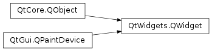
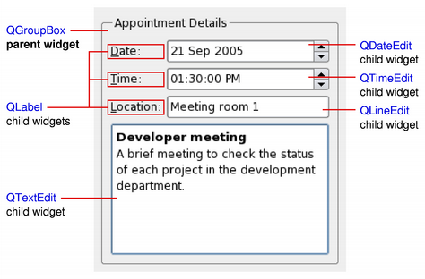
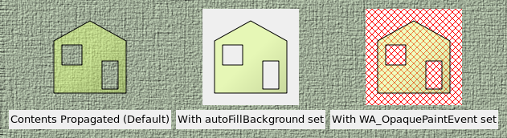

QWidget¶
Inherited by: QAbstractSlider, QSlider, QTabBar, QGroupBox, QTabWidget, QRubberBand, QLineEdit, QFrame, QSvgWidget, QAbstractButton, QAbstractSpinBox, QFocusFrame, QPrintPreviewWidget, QCalendarWidget, QCheckBox, QDialog, QPrintPreviewDialog, QInputDialog, QErrorMessage, QFontDialog, QColorDialog, QToolBar, QToolBox, QToolButton, QStackedWidget, QStatusBar, QDesktopWidget, QDial, QDialogButtonBox, QWizard, QHelpSearchResultWidget, QWizardPage, QDockWidget, QAbstractPrintDialog, QPageSetupDialog, QComboBox, QFontComboBox, QPrintDialog, QPushButton, QCommandLinkButton, QDateTimeEdit, QDateEdit, QTimeEdit, QMdiSubWindow, QMenu, QHelpSearchQueryWidget, QMenuBar, QMessageBox, QOpenGLWidget, QKeySequenceEdit, QLabel, QLCDNumber, QMainWindow, QAbstractScrollArea, QGraphicsView, QtCharts.QChartView, QMdiArea, QScrollArea, QAbstractItemView, QHeaderView, QTableView, QTableWidget, QColumnView, QTreeView, QTreeWidget, QHelpContentWidget, QListView, QListWidget, QUndoView, QHelpIndexWidget, QSizeGrip, QSpinBox, QDoubleSpinBox, QSplashScreen, QSplitter, QSplitterHandle, QProgressBar, QProgressDialog, QRadioButton, QScrollBar, QQuickWidget, QGLWidget, QPlainTextEdit, QTextEdit, QTextBrowser, QFileDialog, QWebEngineView
Synopsis¶
Functions¶
- def
acceptDrops() - def
accessibleDescription() - def
accessibleName() - def
actions() - def
activateWindow() - def
addAction(action) - def
addActions(actions) - def
adjustSize() - def
autoFillBackground() - def
backgroundRole() - def
backingStore() - def
baseSize() - def
childAt(p) - def
childAt(x, y) - def
childrenRect() - def
childrenRegion() - def
clearFocus() - def
clearMask() - def
contentsMargins() - def
contentsRect() - def
contextMenuPolicy() - def
create([arg__1=0[, initializeWindow=true[, destroyOldWindow=true]]]) - def
createWinId() - def
cursor() - def
destroy([destroyWindow=true[, destroySubWindows=true]]) - def
effectiveWinId() - def
ensurePolished() - def
focusNextChild() - def
focusPolicy() - def
focusPreviousChild() - def
focusProxy() - def
focusWidget() - def
font() - def
fontInfo() - def
fontMetrics() - def
foregroundRole() - def
frameGeometry() - def
frameSize() - def
geometry() - def
getContentsMargins() - def
grab([rectangle=QRect(QPoint(0, 0), QSize(-1, -1))]) - def
grabGesture(type[, flags=Qt.GestureFlags()]) - def
grabKeyboard() - def
grabMouse() - def
grabMouse(arg__1) - def
grabShortcut(key[, context=Qt.WindowShortcut]) - def
graphicsEffect() - def
graphicsProxyWidget() - def
hasFocus() - def
hasMouseTracking() - def
hasTabletTracking() - def
inputMethodHints() - def
insertAction(before, action) - def
insertActions(before, actions) - def
internalWinId() - def
isActiveWindow() - def
isAncestorOf(child) - def
isEnabled() - def
isEnabledTo(arg__1) - def
isEnabledToTLW() - def
isFullScreen() - def
isHidden() - def
isLeftToRight() - def
isMaximized() - def
isMinimized() - def
isModal() - def
isRightToLeft() - def
isTopLevel() - def
isVisible() - def
isVisibleTo(arg__1) - def
isWindow() - def
isWindowModified() - def
layout() - def
layoutDirection() - def
locale() - def
mapFrom(arg__1, arg__2) - def
mapFromGlobal(arg__1) - def
mapFromParent(arg__1) - def
mapTo(arg__1, arg__2) - def
mapToGlobal(arg__1) - def
mapToParent(arg__1) - def
mask() - def
maximumHeight() - def
maximumSize() - def
maximumWidth() - def
minimumHeight() - def
minimumSize() - def
minimumWidth() - def
move(arg__1) - def
move(x, y) - def
nativeParentWidget() - def
nextInFocusChain() - def
normalGeometry() - def
overrideWindowFlags(type) - def
overrideWindowState(state) - def
palette() - def
parentWidget() - def
pos() - def
previousInFocusChain() - def
rect() - def
releaseKeyboard() - def
releaseMouse() - def
releaseShortcut(id) - def
removeAction(action) - def
render(painter, targetOffset[, sourceRegion=QRegion()[, renderFlags=QWidget.RenderFlags(DrawWindowBackground | DrawChildren)]]) - def
render(target[, targetOffset=QPoint()[, sourceRegion=QRegion()[, renderFlags=QWidget.RenderFlags(DrawWindowBackground | DrawChildren)]]]) - def
repaint(arg__1) - def
repaint(arg__1) - def
repaint(x, y, w, h) - def
resize(arg__1) - def
resize(w, h) - def
restoreGeometry(geometry) - def
saveGeometry() - def
scroll(dx, dy) - def
scroll(dx, dy, arg__3) - def
setAcceptDrops(on) - def
setAccessibleDescription(description) - def
setAccessibleName(name) - def
setAttribute(arg__1[, on=true]) - def
setAutoFillBackground(enabled) - def
setBackgroundRole(arg__1) - def
setBaseSize(arg__1) - def
setBaseSize(basew, baseh) - def
setContentsMargins(left, top, right, bottom) - def
setContentsMargins(margins) - def
setContextMenuPolicy(policy) - def
setCursor(arg__1) - def
setFixedHeight(h) - def
setFixedSize(arg__1) - def
setFixedSize(w, h) - def
setFixedWidth(w) - def
setFocus(reason) - def
setFocusPolicy(policy) - def
setFocusProxy(arg__1) - def
setFont(arg__1) - def
setForegroundRole(arg__1) - def
setGeometry(arg__1) - def
setGeometry(x, y, w, h) - def
setGraphicsEffect(effect) - def
setInputMethodHints(hints) - def
setLayout(arg__1) - def
setLayoutDirection(direction) - def
setLocale(locale) - def
setMask(arg__1) - def
setMask(arg__1) - def
setMaximumHeight(maxh) - def
setMaximumSize(arg__1) - def
setMaximumSize(maxw, maxh) - def
setMaximumWidth(maxw) - def
setMinimumHeight(minh) - def
setMinimumSize(arg__1) - def
setMinimumSize(minw, minh) - def
setMinimumWidth(minw) - def
setMouseTracking(enable) - def
setPalette(arg__1) - def
setParent(parent) - def
setParent(parent, f) - def
setShortcutAutoRepeat(id[, enable=true]) - def
setShortcutEnabled(id[, enable=true]) - def
setSizeIncrement(arg__1) - def
setSizeIncrement(w, h) - def
setSizePolicy(arg__1) - def
setSizePolicy(horizontal, vertical) - def
setStatusTip(arg__1) - def
setStyle(arg__1) - def
setTabletTracking(enable) - def
setToolTip(arg__1) - def
setToolTipDuration(msec) - def
setUpdatesEnabled(enable) - def
setWhatsThis(arg__1) - def
setWindowFilePath(filePath) - def
setWindowFlag(arg__1[, on=true]) - def
setWindowFlags(type) - def
setWindowIcon(icon) - def
setWindowIconText(arg__1) - def
setWindowModality(windowModality) - def
setWindowOpacity(level) - def
setWindowRole(arg__1) - def
setWindowState(state) - def
size() - def
sizeIncrement() - def
sizePolicy() - def
stackUnder(arg__1) - def
statusTip() - def
style() - def
styleSheet() - def
testAttribute(arg__1) - def
toolTip() - def
toolTipDuration() - def
topLevelWidget() - def
underMouse() - def
ungrabGesture(type) - def
unsetCursor() - def
unsetLayoutDirection() - def
unsetLocale() - def
update(arg__1) - def
update(arg__1) - def
update(x, y, w, h) - def
updateGeometry() - def
updatesEnabled() - def
visibleRegion() - def
whatsThis() - def
winId() - def
window() - def
windowFilePath() - def
windowFlags() - def
windowHandle() - def
windowIcon() - def
windowIconText() - def
windowModality() - def
windowOpacity() - def
windowRole() - def
windowState() - def
windowTitle() - def
windowType() - def
x() - def
y()
Virtual functions¶
- def
actionEvent(event) - def
changeEvent(event) - def
closeEvent(event) - def
contextMenuEvent(event) - def
dragEnterEvent(event) - def
dragLeaveEvent(event) - def
dragMoveEvent(event) - def
dropEvent(event) - def
enterEvent(event) - def
focusInEvent(event) - def
focusNextPrevChild(next) - def
focusOutEvent(event) - def
hasHeightForWidth() - def
heightForWidth(arg__1) - def
hideEvent(event) - def
inputMethodEvent(event) - def
inputMethodQuery(arg__1) - def
keyPressEvent(event) - def
keyReleaseEvent(event) - def
leaveEvent(event) - def
minimumSizeHint() - def
mouseDoubleClickEvent(event) - def
mouseMoveEvent(event) - def
mousePressEvent(event) - def
mouseReleaseEvent(event) - def
moveEvent(event) - def
paintEvent(event) - def
resizeEvent(event) - def
setVisible(visible) - def
showEvent(event) - def
sizeHint() - def
tabletEvent(event) - def
wheelEvent(event)
Slots¶
- def
close() - def
hide() - def
lower() - def
raise_() - def
repaint() - def
setDisabled(arg__1) - def
setEnabled(arg__1) - def
setFocus() - def
setHidden(hidden) - def
setStyleSheet(styleSheet) - def
setWindowModified(arg__1) - def
setWindowTitle(arg__1) - def
show() - def
showFullScreen() - def
showMaximized() - def
showMinimized() - def
showNormal() - def
update() - def
updateMicroFocus()
Signals¶
- def
customContextMenuRequested(pos) - def
windowIconChanged(icon) - def
windowIconTextChanged(iconText) - def
windowTitleChanged(title)
Static functions¶
- def
createWindowContainer(window[, parent=nullptr[, flags=Qt.WindowFlags()]]) - def
find(arg__1) - def
keyboardGrabber() - def
mouseGrabber() - def
setTabOrder(arg__1, arg__2)
Detailed Description¶
The
PySide2.QtWidgets.QWidgetclass is the base class of all user interface objects.The widget is the atom of the user interface: it receives mouse, keyboard and other events from the window system, and paints a representation of itself on the screen. Every widget is rectangular, and they are sorted in a Z-order. A widget is clipped by its parent and by the widgets in front of it.
A widget that is not embedded in a parent widget is called a window. Usually, windows have a frame and a title bar, although it is also possible to create windows without such decoration using suitable
window flags). In Qt,PySide2.QtWidgets.QMainWindowand the various subclasses ofPySide2.QtWidgets.QDialogare the most common window types.Every widget’s constructor accepts one or two standard arguments:
QWidget *parent = 0is the parent of the new widget. If it is 0 (the default), the new widget will be a window. If not, it will be a child of parent, and be constrained by parent’s geometry (unless you specifyQt.Windowas window flag).Qt::WindowFlags f = 0(where available) sets the window flags; the default is suitable for almost all widgets, but to get, for example, a window without a window system frame, you must use special flags.
PySide2.QtWidgets.QWidgethas many member functions, but some of them have little direct functionality; for example,PySide2.QtWidgets.QWidgethas a font property, but never uses this itself. There are many subclasses which provide real functionality, such asPySide2.QtWidgets.QLabel,PySide2.QtWidgets.QPushButton,PySide2.QtWidgets.QListWidget, andPySide2.QtWidgets.QTabWidget.
Top-Level and Child Widgets¶
A widget without a parent widget is always an independent window (top-level widget). For these widgets,
PySide2.QtWidgets.QWidget.setWindowTitle()andPySide2.QtWidgets.QWidget.setWindowIcon()set the title bar and icon respectively.Non-window widgets are child widgets, displayed within their parent widgets. Most widgets in Qt are mainly useful as child widgets. For example, it is possible to display a button as a top-level window, but most people prefer to put their buttons inside other widgets, such as
PySide2.QtWidgets.QDialog.The diagram above shows a
PySide2.QtWidgets.QGroupBoxwidget being used to hold various child widgets in a layout provided byPySide2.QtWidgets.QGridLayout. ThePySide2.QtWidgets.QLabelchild widgets have been outlined to indicate their full sizes.If you want to use a
PySide2.QtWidgets.QWidgetto hold child widgets you will usually want to add a layout to the parentPySide2.QtWidgets.QWidget. See Layout Management for more information.
Composite Widgets¶
When a widget is used as a container to group a number of child widgets, it is known as a composite widget. These can be created by constructing a widget with the required visual properties - a
PySide2.QtWidgets.QFrame, for example - and adding child widgets to it, usually managed by a layout. The above diagram shows such a composite widget that was created using Qt Designer.Composite widgets can also be created by subclassing a standard widget, such as
PySide2.QtWidgets.QWidgetorPySide2.QtWidgets.QFrame, and adding the necessary layout and child widgets in the constructor of the subclass. Many of the examples provided with Qt use this approach, and it is also covered in the Qt Tutorials .
Custom Widgets and Painting¶
Since
PySide2.QtWidgets.QWidgetis a subclass ofPySide2.QtGui.QPaintDevice, subclasses can be used to display custom content that is composed using a series of painting operations with an instance of thePySide2.QtGui.QPainterclass. This approach contrasts with the canvas-style approach used by the Graphics View Framework where items are added to a scene by the application and are rendered by the framework itself.Each widget performs all painting operations from within its
PySide2.QtWidgets.QWidget.paintEvent()function. This is called whenever the widget needs to be redrawn, either as a result of some external change or when requested by the application.The Analog Clock example shows how a simple widget can handle paint events.
Size Hints and Size Policies¶
When implementing a new widget, it is almost always useful to reimplement
PySide2.QtWidgets.QWidget.sizeHint()to provide a reasonable default size for the widget and to set the correct size policy withPySide2.QtWidgets.QWidget.setSizePolicy().By default, composite widgets which do not provide a size hint will be sized according to the space requirements of their child widgets.
The size policy lets you supply good default behavior for the layout management system, so that other widgets can contain and manage yours easily. The default size policy indicates that the size hint represents the preferred size of the widget, and this is often good enough for many widgets.
Note
The size of top-level widgets are constrained to 2/3 of the desktop’s height and width. You can
PySide2.QtWidgets.QWidget.resize()the widget manually if these bounds are inadequate.
Events¶
Widgets respond to events that are typically caused by user actions. Qt delivers events to widgets by calling specific event handler functions with instances of
PySide2.QtCore.QEventsubclasses containing information about each event.If your widget only contains child widgets, you probably do not need to implement any event handlers. If you want to detect a mouse click in a child widget call the child’s
PySide2.QtWidgets.QWidget.underMouse()function inside the widget’sPySide2.QtWidgets.QWidget.mousePressEvent().The Scribble example implements a wider set of events to handle mouse movement, button presses, and window resizing.
You will need to supply the behavior and content for your own widgets, but here is a brief overview of the events that are relevant to
PySide2.QtWidgets.QWidget, starting with the most common ones:
PySide2.QtWidgets.QWidget.paintEvent()is called whenever the widget needs to be repainted. Every widget displaying custom content must implement it. Painting using aPySide2.QtGui.QPaintercan only take place in aPySide2.QtWidgets.QWidget.paintEvent()or a function called by aPySide2.QtWidgets.QWidget.paintEvent().PySide2.QtWidgets.QWidget.resizeEvent()is called when the widget has been resized.PySide2.QtWidgets.QWidget.mousePressEvent()is called when a mouse button is pressed while the mouse cursor is inside the widget, or when the widget has grabbed the mouse usingPySide2.QtWidgets.QWidget.grabMouse(). Pressing the mouse without releasing it is effectively the same as callingPySide2.QtWidgets.QWidget.grabMouse().PySide2.QtWidgets.QWidget.mouseReleaseEvent()is called when a mouse button is released. A widget receives mouse release events when it has received the corresponding mouse press event. This means that if the user presses the mouse inside your widget, then drags the mouse somewhere else before releasing the mouse button, your widget receives the release event. There is one exception: if a popup menu appears while the mouse button is held down, this popup immediately steals the mouse events.PySide2.QtWidgets.QWidget.mouseDoubleClickEvent()is called when the user double-clicks in the widget. If the user double-clicks, the widget receives a mouse press event, a mouse release event, (a mouse click event,) a second mouse press, this event and finally a second mouse release event. (Some mouse move events may also be received if the mouse is not held steady during this operation.) It is not possible to distinguish a click from a double-click until the second click arrives. (This is one reason why most GUI books recommend that double-clicks be an extension of single-clicks, rather than trigger a different action.)Widgets that accept keyboard input need to reimplement a few more event handlers:
PySide2.QtWidgets.QWidget.keyPressEvent()is called whenever a key is pressed, and again when a key has been held down long enough for it to auto-repeat. The Tab and Shift+Tab keys are only passed to the widget if they are not used by the focus-change mechanisms. To force those keys to be processed by your widget, you must reimplementQWidget.event().PySide2.QtWidgets.QWidget.focusInEvent()is called when the widget gains keyboard focus (assuming you have calledPySide2.QtWidgets.QWidget.setFocusPolicy()). Well-behaved widgets indicate that they own the keyboard focus in a clear but discreet way.PySide2.QtWidgets.QWidget.focusOutEvent()is called when the widget loses keyboard focus.You may be required to also reimplement some of the less common event handlers:
PySide2.QtWidgets.QWidget.mouseMoveEvent()is called whenever the mouse moves while a mouse button is held down. This can be useful during drag and drop operations. If you callPySide2.QtWidgets.QWidget.setMouseTracking()(true), you get mouse move events even when no buttons are held down. (See also the Drag and Drop guide.)PySide2.QtWidgets.QWidget.keyReleaseEvent()is called whenever a key is released and while it is held down (if the key is auto-repeating). In that case, the widget will receive a pair of key release and key press event for every repeat. The Tab and Shift+Tab keys are only passed to the widget if they are not used by the focus-change mechanisms. To force those keys to be processed by your widget, you must reimplementQWidget.event().PySide2.QtWidgets.QWidget.wheelEvent()is called whenever the user turns the mouse wheel while the widget has the focus.PySide2.QtWidgets.QWidget.enterEvent()is called when the mouse enters the widget’s screen space. (This excludes screen space owned by any of the widget’s children.)PySide2.QtWidgets.QWidget.leaveEvent()is called when the mouse leaves the widget’s screen space. If the mouse enters a child widget it will not cause aPySide2.QtWidgets.QWidget.leaveEvent().PySide2.QtWidgets.QWidget.moveEvent()is called when the widget has been moved relative to its parent.PySide2.QtWidgets.QWidget.closeEvent()is called when the user closes the widget (or whenPySide2.QtWidgets.QWidget.close()is called).There are also some rather obscure events described in the documentation for
QEvent.Type. To handle these events, you need to reimplementPySide2.QtWidgets.QWidget.event()directly.The default implementation of
PySide2.QtWidgets.QWidget.event()handles Tab and Shift+Tab (to move the keyboard focus), and passes on most of the other events to one of the more specialized handlers above.Events and the mechanism used to deliver them are covered in The Event System .
Groups of Functions and Properties¶
Widget Style Sheets¶
In addition to the standard widget styles for each platform, widgets can also be styled according to rules specified in a style sheet . This feature enables you to customize the appearance of specific widgets to provide visual cues to users about their purpose. For example, a button could be styled in a particular way to indicate that it performs a destructive action.
The use of widget style sheets is described in more detail in the Qt Style Sheets document.
Transparency and Double Buffering¶
Since Qt 4.0,
PySide2.QtWidgets.QWidgetautomatically double-buffers its painting, so there is no need to write double-buffering code inPySide2.QtWidgets.QWidget.paintEvent()to avoid flicker.Since Qt 4.1, the
Qt.WA_ContentsPropagatedwidget attribute has been deprecated. Instead, the contents of parent widgets are propagated by default to each of their children as long asQt.WA_PaintOnScreenis not set. Custom widgets can be written to take advantage of this feature by updating irregular regions (to create non-rectangular child widgets), or painting with colors that have less than full alpha component. The following diagram shows how attributes and properties of a custom widget can be fine-tuned to achieve different effects.In the above diagram, a semi-transparent rectangular child widget with an area removed is constructed and added to a parent widget (a
PySide2.QtWidgets.QLabelshowing a pixmap). Then, different properties and widget attributes are set to achieve different effects:
- The left widget has no additional properties or widget attributes set. This default state suits most custom widgets using transparency, are irregularly-shaped, or do not paint over their entire area with an opaque brush.
- The center widget has the
PySide2.QtWidgets.QWidget.autoFillBackground()property set. This property is used with custom widgets that rely on the widget to supply a default background, and do not paint over their entire area with an opaque brush.- The right widget has the
Qt.WA_OpaquePaintEventwidget attribute set. This indicates that the widget will paint over its entire area with opaque colors. The widget’s area will initially be uninitialized, represented in the diagram with a red diagonal grid pattern that shines through the overpainted area. The Qt::WA_OpaquePaintArea attribute is useful for widgets that need to paint their own specialized contents quickly and do not need a default filled background.To rapidly update custom widgets with simple background colors, such as real-time plotting or graphing widgets, it is better to define a suitable background color (using
PySide2.QtWidgets.QWidget.setBackgroundRole()with theQPalette.Windowrole), set thePySide2.QtWidgets.QWidget.autoFillBackground()property, and only implement the necessary drawing functionality in the widget’sPySide2.QtWidgets.QWidget.paintEvent().To rapidly update custom widgets that constantly paint over their entire areas with opaque content, e.g., video streaming widgets, it is better to set the widget’s
Qt.WA_OpaquePaintEvent, avoiding any unnecessary overhead associated with repainting the widget’s background.If a widget has both the
Qt.WA_OpaquePaintEventwidget attribute and thePySide2.QtWidgets.QWidget.autoFillBackground()property set, theQt.WA_OpaquePaintEventattribute takes precedence. Depending on your requirements, you should choose either one of them.Since Qt 4.1, the contents of parent widgets are also propagated to standard Qt widgets. This can lead to some unexpected results if the parent widget is decorated in a non-standard way, as shown in the diagram below.

The scope for customizing the painting behavior of standard Qt widgets, without resorting to subclassing, is slightly less than that possible for custom widgets. Usually, the desired appearance of a standard widget can be achieved by setting its
PySide2.QtWidgets.QWidget.autoFillBackground()property.
Creating Translucent Windows¶
Since Qt 4.5, it has been possible to create windows with translucent regions on window systems that support compositing.
To enable this feature in a top-level widget, set its
Qt.WA_TranslucentBackgroundattribute withPySide2.QtWidgets.QWidget.setAttribute()and ensure that its background is painted with non-opaque colors in the regions you want to be partially transparent.Platform notes:
- X11: This feature relies on the use of an X server that supports ARGB visuals and a compositing window manager.
- Windows: The widget needs to have the
Qt.FramelessWindowHintwindow flag set for the translucency to work.
Native Widgets vs Alien Widgets¶
Introduced in Qt 4.4, alien widgets are widgets unknown to the windowing system. They do not have a native window handle associated with them. This feature significantly speeds up widget painting, resizing, and removes flicker.
Should you require the old behavior with native windows, you can choose one of the following options:
- Use the
QT_USE_NATIVE_WINDOWS=1in your environment.- Set the
Qt.AA_NativeWindowsattribute on your application. All widgets will be native widgets.- Set the
Qt.WA_NativeWindowattribute on widgets: The widget itself and all of its ancestors will become native (unlessQt.WA_DontCreateNativeAncestorsis set).- Call
QWidget.winIdto enforce a native window (this implies 3).- Set the
Qt.WA_PaintOnScreenattribute to enforce a native window (this implies 3).
-
class
PySide2.QtWidgets.QWidget([parent=nullptr[, f=Qt.WindowFlags()]])¶ Parameters: - f –
PySide2.QtCore.Qt.WindowFlags - parent –
PySide2.QtWidgets.QWidget
Constructs a widget which is a child of
parent, with widget flags set tof.If
parentis 0, the new widget becomes a window. Ifparentis another widget, this widget becomes a child window insideparent. The new widget is deleted when itsparentis deleted.The widget flags argument,
f, is normally 0, but it can be set to customize the frame of a window (i.e.parentmust be 0). To customize the frame, use a value composed from the bitwise OR of any of thewindow flags.If you add a child widget to an already visible widget you must explicitly show the child to make it visible.
Note that the X11 version of Qt may not be able to deliver all combinations of style flags on all systems. This is because on X11, Qt can only ask the window manager, and the window manager can override the application’s settings. On Windows, Qt can set whatever flags you want.
- f –
-
PySide2.QtWidgets.QWidget.RenderFlag¶ This enum describes how to render the widget when calling
QWidget.render().Constant Description QWidget.DrawWindowBackground If you enable this option, the widget’s background is rendered into the target even if PySide2.QtWidgets.QWidget.autoFillBackground()is not set. By default, this option is enabled.QWidget.DrawChildren If you enable this option, the widget’s children are rendered recursively into the target. By default, this option is enabled. QWidget.IgnoreMask If you enable this option, the widget’s QWidget.mask()is ignored when rendering into the target. By default, this option is disabled.
-
PySide2.QtWidgets.QWidget.acceptDrops()¶ Return type: PySide2.QtCore.bool
-
PySide2.QtWidgets.QWidget.accessibleDescription()¶ Return type: unicode
-
PySide2.QtWidgets.QWidget.accessibleName()¶ Return type: unicode
-
PySide2.QtWidgets.QWidget.actionEvent(event)¶ Parameters: event – PySide2.QtGui.QActionEventThis event handler is called with the given
eventwhenever the widget’s actions are changed.
-
PySide2.QtWidgets.QWidget.actions()¶ Return type: Returns the (possibly empty) list of this widget’s actions.
-
PySide2.QtWidgets.QWidget.activateWindow()¶ Sets the top-level widget containing this widget to be the active window.
An active window is a visible top-level window that has the keyboard input focus.
This function performs the same operation as clicking the mouse on the title bar of a top-level window. On X11, the result depends on the Window Manager. If you want to ensure that the window is stacked on top as well you should also call
raise(). Note that the window must be visible, otherwise has no effect.On Windows, if you are calling this when the application is not currently the active one then it will not make it the active window. It will change the color of the taskbar entry to indicate that the window has changed in some way. This is because Microsoft does not allow an application to interrupt what the user is currently doing in another application.
See also
PySide2.QtWidgets.QWidget.isActiveWindow()PySide2.QtWidgets.QWidget.window()PySide2.QtWidgets.QWidget.show()QWindowsWindowFunctions.setWindowActivationBehavior()
-
PySide2.QtWidgets.QWidget.addAction(action)¶ Parameters: action – PySide2.QtWidgets.QActionAppends the action
actionto this widget’s list of actions.All QWidgets have a list of
PySide2.QtWidgets.QActions, however they can be represented graphically in many different ways. The default use of thePySide2.QtWidgets.QActionlist (as returned byPySide2.QtWidgets.QWidget.actions()) is to create a contextPySide2.QtWidgets.QMenu.A
PySide2.QtWidgets.QWidgetshould only have one of each action and adding an action it already has will not cause the same action to be in the widget twice.The ownership of
actionis not transferred to thisPySide2.QtWidgets.QWidget.
-
PySide2.QtWidgets.QWidget.addActions(actions)¶ Parameters: actions – Appends the actions
actionsto this widget’s list of actions.
-
PySide2.QtWidgets.QWidget.adjustSize()¶ Adjusts the size of the widget to fit its contents.
This function uses
PySide2.QtWidgets.QWidget.sizeHint()if it is valid, i.e., the size hint’s width and height are >= 0. Otherwise, it sets the size to the children rectangle that covers all child widgets (the union of all child widget rectangles).For windows, the screen size is also taken into account. If the
PySide2.QtWidgets.QWidget.sizeHint()is less than (200, 100) and the size policy isexpanding, the window will be at least (200, 100). The maximum size of a window is 2/3 of the screen’s width and height.
-
PySide2.QtWidgets.QWidget.autoFillBackground()¶ Return type: PySide2.QtCore.bool
-
PySide2.QtWidgets.QWidget.backgroundRole()¶ Return type: PySide2.QtGui.QPalette.ColorRoleReturns the background role of the widget.
The background role defines the brush from the widget’s
PySide2.QtWidgets.QWidget.palette()that is used to render the background.If no explicit background role is set, the widget inherts its parent widget’s background role.
-
PySide2.QtWidgets.QWidget.backingStore()¶ Return type: PySide2.QtGui.QBackingStoreReturns the
PySide2.QtGui.QBackingStorethis widget will be drawn into.
-
PySide2.QtWidgets.QWidget.baseSize()¶ Return type: PySide2.QtCore.QSize
-
PySide2.QtWidgets.QWidget.changeEvent(event)¶ Parameters: event – PySide2.QtCore.QEventThis event handler can be reimplemented to handle state changes.
The state being changed in this event can be retrieved through the
eventsupplied.Change events include:
QEvent.ToolBarChange,QEvent.ActivationChange,QEvent.EnabledChange,QEvent.FontChange,QEvent.StyleChange,QEvent.PaletteChange,QEvent.WindowTitleChange,QEvent.IconTextChange,QEvent.ModifiedChange,QEvent.MouseTrackingChange,QEvent.ParentChange,QEvent.WindowStateChange,QEvent.LanguageChange,QEvent.LocaleChange,QEvent.LayoutDirectionChange,QEvent.ReadOnlyChange.
-
PySide2.QtWidgets.QWidget.childAt(p)¶ Parameters: p – PySide2.QtCore.QPointReturn type: PySide2.QtWidgets.QWidgetThis is an overloaded function.
Returns the visible child widget at point
pin the widget’s own coordinate system.
-
PySide2.QtWidgets.QWidget.childAt(x, y) Parameters: - x –
PySide2.QtCore.int - y –
PySide2.QtCore.int
Return type: Returns the visible child widget at the position (
x,y) in the widget’s coordinate system. If there is no visible child widget at the specified position, the function returns 0.- x –
-
PySide2.QtWidgets.QWidget.childrenRect()¶ Return type: PySide2.QtCore.QRect
-
PySide2.QtWidgets.QWidget.childrenRegion()¶ Return type: PySide2.QtGui.QRegion
-
PySide2.QtWidgets.QWidget.clearFocus()¶ Takes keyboard input focus from the widget.
If the widget has active focus, a
focus out eventis sent to this widget to tell it that it has lost the focus.This widget must enable focus setting in order to get the keyboard input focus, i.e. it must call
PySide2.QtWidgets.QWidget.setFocusPolicy().
-
PySide2.QtWidgets.QWidget.clearMask()¶ Removes any mask set by
PySide2.QtWidgets.QWidget.setMask().See also
-
PySide2.QtWidgets.QWidget.close()¶ Return type: PySide2.QtCore.boolCloses this widget. Returns
trueif the widget was closed; otherwise returnsfalse.First it sends the widget a
PySide2.QtGui.QCloseEvent. The widget ishiddenif itacceptsthe close event. If itignoresthe event, nothing happens. The default implementation ofQWidget.closeEvent()accepts the close event.If the widget has the
Qt.WA_DeleteOnCloseflag, the widget is also deleted. A close events is delivered to the widget no matter if the widget is visible or not.The
QApplication.lastWindowClosed()signal is emitted when the last visible primary window (i.e. window with no parent) with theQt.WA_QuitOnCloseattribute set is closed. By default this attribute is set for all widgets except transient windows such as splash screens, tool windows, and popup menus.
-
PySide2.QtWidgets.QWidget.closeEvent(event)¶ Parameters: event – PySide2.QtGui.QCloseEventThis event handler is called with the given
eventwhen Qt receives a window close request for a top-level widget from the window system.By default, the event is accepted and the widget is closed. You can reimplement this function to change the way the widget responds to window close requests. For example, you can prevent the window from closing by calling
PySide2.QtCore.QEvent.ignore()on all events.Main window applications typically use reimplementations of this function to check whether the user’s work has been saved and ask for permission before closing. For example, the Application Example uses a helper function to determine whether or not to close the window:
def closeEvent(self, event): if maybeSave(): writeSettings() event.accept() else: event.ignore()
See also
PySide2.QtWidgets.QWidget.event()PySide2.QtWidgets.QWidget.hide()PySide2.QtWidgets.QWidget.close()PySide2.QtGui.QCloseEventApplication Example
-
PySide2.QtWidgets.QWidget.contentsMargins()¶ Return type: PySide2.QtCore.QMarginsThe function returns the widget’s contents margins.
-
PySide2.QtWidgets.QWidget.contentsRect()¶ Return type: PySide2.QtCore.QRectReturns the area inside the widget’s margins.
-
PySide2.QtWidgets.QWidget.contextMenuEvent(event)¶ Parameters: event – PySide2.QtGui.QContextMenuEventThis event handler, for event
event, can be reimplemented in a subclass to receive widget context menu events.The handler is called when the widget’s
PySide2.QtWidgets.QWidget.contextMenuPolicy()isQt.DefaultContextMenu.The default implementation ignores the context event. See the
PySide2.QtGui.QContextMenuEventdocumentation for more details.See also
PySide2.QtWidgets.QWidget.event()PySide2.QtGui.QContextMenuEventPySide2.QtWidgets.QWidget.customContextMenuRequested()
-
PySide2.QtWidgets.QWidget.contextMenuPolicy()¶ Return type: PySide2.QtCore.Qt.ContextMenuPolicy
-
PySide2.QtWidgets.QWidget.create([arg__1=0[, initializeWindow=true[, destroyOldWindow=true]]])¶ Parameters: - arg__1 –
PySide2.QtGui.WId - initializeWindow –
PySide2.QtCore.bool - destroyOldWindow –
PySide2.QtCore.bool
Creates a new widget window.
The parameter
windowis ignored in Qt 5. Please useQWindow.fromWinId()to create aPySide2.QtGui.QWindowwrapping a foreign window and pass it toQWidget.createWindowContainer()instead.Initializes the window (sets the geometry etc.) if
initializeWindowis true. IfinitializeWindowis false, no initialization is performed. This parameter only makes sense ifwindowis a valid window.Destroys the old window if
destroyOldWindowis true. IfdestroyOldWindowis false, you are responsible for destroying the window yourself (using platform native code).The
PySide2.QtWidgets.QWidgetconstructor calls create(0,true,true) to create a window for this widget.See also
PySide2.QtWidgets.QWidget.createWindowContainer()QWindow.fromWinId()- arg__1 –
-
PySide2.QtWidgets.QWidget.createWinId()¶ Ensures that the widget has a window system identifier, i.e. that it is known to the windowing system.
-
static
PySide2.QtWidgets.QWidget.createWindowContainer(window[, parent=nullptr[, flags=Qt.WindowFlags()]])¶ Parameters: - window –
PySide2.QtGui.QWindow - parent –
PySide2.QtWidgets.QWidget - flags –
PySide2.QtCore.Qt.WindowFlags
Return type: Creates a
PySide2.QtWidgets.QWidgetthat makes it possible to embedwindowinto aPySide2.QtWidgets.QWidget-based application.The window container is created as a child of
parentand with window flagsflags.Once the window has been embedded into the container, the container will control the window’s geometry and visibility. Explicit calls to
QWindow.setGeometry(),QWindow.show()orQWindow.hide()on an embedded window is not recommended.The container takes over ownership of
window. The window can be removed from the window container with a call toQWindow.setParent().The window container is attached as a native child window to the toplevel window it is a child of. When a window container is used as a child of a
PySide2.QtWidgets.QAbstractScrollAreaorPySide2.QtWidgets.QMdiArea, it will create anative windowfor every widget in its parent chain to allow for proper stacking and clipping in this use case. Creating a native window for the window container also allows for proper stacking and clipping. This must be done before showing the window container. Applications with many native child windows may suffer from performance issues.The window container has a number of known limitations:
- Stacking order; The embedded window will stack on top of the widget hierarchy as an opaque box. The stacking order of multiple overlapping window container instances is undefined.
- Rendering Integration; The window container does not interoperate with
PySide2.QtWidgets.QGraphicsProxyWidget,QWidget.render()or similar functionality. - Focus Handling; It is possible to let the window container instance have any focus policy and it will delegate focus to the window via a call to
QWindow.requestActivate(). However, returning to the normal focus chain from thePySide2.QtGui.QWindowinstance will be up to thePySide2.QtGui.QWindowinstance implementation itself. For instance, when entering a Qt Quick based window with tab focus, it is quite likely that further tab presses will only cycle inside the QML application. Also, whetherQWindow.requestActivate()actually gives the window focus, is platform dependent. - Using many window container instances in a
PySide2.QtWidgets.QWidget-based application can greatly hurt the overall performance of the application.
- window –
-
PySide2.QtWidgets.QWidget.cursor()¶ Return type: PySide2.QtGui.QCursor
-
PySide2.QtWidgets.QWidget.customContextMenuRequested(pos)¶ Parameters: pos – PySide2.QtCore.QPoint
-
PySide2.QtWidgets.QWidget.destroy([destroyWindow=true[, destroySubWindows=true]])¶ Parameters: - destroyWindow –
PySide2.QtCore.bool - destroySubWindows –
PySide2.QtCore.bool
Frees up window system resources. Destroys the widget window if
destroyWindowis true.calls itself recursively for all the child widgets, passing
destroySubWindowsfor thedestroyWindowparameter. To have more control over destruction of subwidgets, destroy subwidgets selectively first.This function is usually called from the
PySide2.QtWidgets.QWidgetdestructor.- destroyWindow –
-
PySide2.QtWidgets.QWidget.dragEnterEvent(event)¶ Parameters: event – PySide2.QtGui.QDragEnterEventThis event handler is called when a drag is in progress and the mouse enters this widget. The event is passed in the
eventparameter.If the event is ignored, the widget won’t receive any
drag move events.See the Drag-and-drop documentation for an overview of how to provide drag-and-drop in your application.
-
PySide2.QtWidgets.QWidget.dragLeaveEvent(event)¶ Parameters: event – PySide2.QtGui.QDragLeaveEventThis event handler is called when a drag is in progress and the mouse leaves this widget. The event is passed in the
eventparameter.See the Drag-and-drop documentation for an overview of how to provide drag-and-drop in your application.
-
PySide2.QtWidgets.QWidget.dragMoveEvent(event)¶ Parameters: event – PySide2.QtGui.QDragMoveEventThis event handler is called if a drag is in progress, and when any of the following conditions occur: the cursor enters this widget, the cursor moves within this widget, or a modifier key is pressed on the keyboard while this widget has the focus. The event is passed in the
eventparameter.See the Drag-and-drop documentation for an overview of how to provide drag-and-drop in your application.
-
PySide2.QtWidgets.QWidget.dropEvent(event)¶ Parameters: event – PySide2.QtGui.QDropEventThis event handler is called when the drag is dropped on this widget. The event is passed in the
eventparameter.See the Drag-and-drop documentation for an overview of how to provide drag-and-drop in your application.
-
PySide2.QtWidgets.QWidget.effectiveWinId()¶ Return type: PySide2.QtGui.WIdReturns the effective window system identifier of the widget, i.e. the native parent’s window system identifier.
If the widget is native, this function returns the native widget ID. Otherwise, the window ID of the first native parent widget, i.e., the top-level widget that contains this widget, is returned.
Note
We recommend that you do not store this value as it is likely to change at run-time.
-
PySide2.QtWidgets.QWidget.ensurePolished()¶ Ensures that the widget and its children have been polished by
PySide2.QtWidgets.QStyle(i.e., have a proper font and palette).PySide2.QtWidgets.QWidgetcalls this function after it has been fully constructed but before it is shown the very first time. You can call this function if you want to ensure that the widget is polished before doing an operation, e.g., the correct font size might be needed in the widget’sPySide2.QtWidgets.QWidget.sizeHint()reimplementation. Note that this function is called from the default implementation ofPySide2.QtWidgets.QWidget.sizeHint().Polishing is useful for final initialization that must happen after all constructors (from base classes as well as from subclasses) have been called.
If you need to change some settings when a widget is polished, reimplement
PySide2.QtWidgets.QWidget.event()and handle theQEvent.Polishevent type.Note
The function is declared const so that it can be called from other const functions (e.g.,
PySide2.QtWidgets.QWidget.sizeHint()).See also
PySide2.QtWidgets.QWidget.event()
-
PySide2.QtWidgets.QWidget.enterEvent(event)¶ Parameters: event – PySide2.QtCore.QEventThis event handler can be reimplemented in a subclass to receive widget enter events which are passed in the
eventparameter.An event is sent to the widget when the mouse cursor enters the widget.
See also
PySide2.QtWidgets.QWidget.leaveEvent()PySide2.QtWidgets.QWidget.mouseMoveEvent()PySide2.QtWidgets.QWidget.event()
-
static
PySide2.QtWidgets.QWidget.find(arg__1)¶ Parameters: arg__1 – PySide2.QtGui.WIdReturn type: PySide2.QtWidgets.QWidgetReturns a pointer to the widget with window identifer/handle
id.The window identifier type depends on the underlying window system, see
qwindowdefs.hfor the actual definition. If there is no widget with this identifier, 0 is returned.
-
PySide2.QtWidgets.QWidget.focusInEvent(event)¶ Parameters: event – PySide2.QtGui.QFocusEventThis event handler can be reimplemented in a subclass to receive keyboard focus events (focus received) for the widget. The event is passed in the
eventparameterA widget normally must
PySide2.QtWidgets.QWidget.setFocusPolicy()to something other thanQt.NoFocusin order to receive focus events. (Note that the application programmer can callPySide2.QtWidgets.QWidget.setFocus()on any widget, even those that do not normally accept focus.)The default implementation updates the widget (except for windows that do not specify a
PySide2.QtWidgets.QWidget.focusPolicy()).
-
PySide2.QtWidgets.QWidget.focusNextChild()¶ Return type: PySide2.QtCore.boolFinds a new widget to give the keyboard focus to, as appropriate for Tab, and returns
trueif it can find a new widget, or false if it can’t.
-
PySide2.QtWidgets.QWidget.focusNextPrevChild(next)¶ Parameters: next – PySide2.QtCore.boolReturn type: PySide2.QtCore.boolFinds a new widget to give the keyboard focus to, as appropriate for Tab and Shift+Tab, and returns
trueif it can find a new widget, or false if it can’t.If
nextis true, this function searches forward, ifnextis false, it searches backward.Sometimes, you will want to reimplement this function. For example, a web browser might reimplement it to move its “current active link” forward or backward, and call only when it reaches the last or first link on the “page”.
Child widgets call on their parent widgets, but only the window that contains the child widgets decides where to redirect focus. By reimplementing this function for an object, you thus gain control of focus traversal for all child widgets.
-
PySide2.QtWidgets.QWidget.focusOutEvent(event)¶ Parameters: event – PySide2.QtGui.QFocusEventThis event handler can be reimplemented in a subclass to receive keyboard focus events (focus lost) for the widget. The events is passed in the
eventparameter.A widget normally must
PySide2.QtWidgets.QWidget.setFocusPolicy()to something other thanQt.NoFocusin order to receive focus events. (Note that the application programmer can callPySide2.QtWidgets.QWidget.setFocus()on any widget, even those that do not normally accept focus.)The default implementation updates the widget (except for windows that do not specify a
PySide2.QtWidgets.QWidget.focusPolicy()).
-
PySide2.QtWidgets.QWidget.focusPolicy()¶ Return type: PySide2.QtCore.Qt.FocusPolicy
-
PySide2.QtWidgets.QWidget.focusPreviousChild()¶ Return type: PySide2.QtCore.boolFinds a new widget to give the keyboard focus to, as appropriate for Shift+Tab, and returns
trueif it can find a new widget, or false if it can’t.
-
PySide2.QtWidgets.QWidget.focusProxy()¶ Return type: PySide2.QtWidgets.QWidgetReturns the focus proxy, or 0 if there is no focus proxy.
-
PySide2.QtWidgets.QWidget.focusWidget()¶ Return type: PySide2.QtWidgets.QWidgetReturns the last child of this widget that
PySide2.QtWidgets.QWidget.setFocus()had been called on. For top level widgets this is the widget that will get focus in case this window gets activatedThis is not the same as
QApplication.focusWidget(), which returns the focus widget in the currently active window.
-
PySide2.QtWidgets.QWidget.font()¶ Return type: PySide2.QtGui.QFontSee also
-
PySide2.QtWidgets.QWidget.fontInfo()¶ Return type: PySide2.QtGui.QFontInfoReturns the font info for the widget’s current font. Equivalent to
QFontInfo(widget->font()).
-
PySide2.QtWidgets.QWidget.fontMetrics()¶ Return type: PySide2.QtGui.QFontMetricsReturns the font metrics for the widget’s current font. Equivalent to
QFontMetrics(widget->font()).
-
PySide2.QtWidgets.QWidget.foregroundRole()¶ Return type: PySide2.QtGui.QPalette.ColorRoleReturns the foreground role.
The foreground role defines the color from the widget’s
PySide2.QtWidgets.QWidget.palette()that is used to draw the foreground.If no explicit foreground role is set, the function returns a role that contrasts with the background role.
-
PySide2.QtWidgets.QWidget.frameGeometry()¶ Return type: PySide2.QtCore.QRect
-
PySide2.QtWidgets.QWidget.frameSize()¶ Return type: PySide2.QtCore.QSize
-
PySide2.QtWidgets.QWidget.geometry()¶ Return type: PySide2.QtCore.QRect
-
PySide2.QtWidgets.QWidget.getContentsMargins()¶ Returns the widget’s contents margins for
left,top,right, andbottom.
-
PySide2.QtWidgets.QWidget.grab([rectangle=QRect(QPoint(0, 0), QSize(-1, -1))])¶ Parameters: rectangle – PySide2.QtCore.QRectReturn type: PySide2.QtGui.QPixmapRenders the widget into a pixmap restricted by the given
rectangle. If the widget has any children, then they are also painted in the appropriate positions.If a rectangle with an invalid size is specified (the default), the entire widget is painted.
-
PySide2.QtWidgets.QWidget.grabGesture(type[, flags=Qt.GestureFlags()])¶ Parameters: - type –
PySide2.QtCore.Qt.GestureType - flags –
PySide2.QtCore.Qt.GestureFlags
Subscribes the widget to a given
gesturewith specificflags.- type –
-
PySide2.QtWidgets.QWidget.grabKeyboard()¶ Grabs the keyboard input.
This widget receives all keyboard events until
PySide2.QtWidgets.QWidget.releaseKeyboard()is called; other widgets get no keyboard events at all. Mouse events are not affected. UsePySide2.QtWidgets.QWidget.grabMouse()if you want to grab that.The focus widget is not affected, except that it doesn’t receive any keyboard events.
PySide2.QtWidgets.QWidget.setFocus()moves the focus as usual, but the new focus widget receives keyboard events only afterPySide2.QtWidgets.QWidget.releaseKeyboard()is called.If a different widget is currently grabbing keyboard input, that widget’s grab is released first.
-
PySide2.QtWidgets.QWidget.grabMouse(arg__1)¶ Parameters: arg__1 – PySide2.QtGui.QCursorThis function overloads
PySide2.QtWidgets.QWidget.grabMouse().Grabs the mouse input and changes the cursor shape.
The cursor will assume shape
cursor(for as long as the mouse focus is grabbed) and this widget will be the only one to receive mouse events untilPySide2.QtWidgets.QWidget.releaseMouse()is called().Warning
Grabbing the mouse might lock the terminal.
Note
See the note in
QWidget.grabMouse().
-
PySide2.QtWidgets.QWidget.grabMouse() Grabs the mouse input.
This widget receives all mouse events until
PySide2.QtWidgets.QWidget.releaseMouse()is called; other widgets get no mouse events at all. Keyboard events are not affected. UsePySide2.QtWidgets.QWidget.grabKeyboard()if you want to grab that.Warning
Bugs in mouse-grabbing applications very often lock the terminal. Use this function with extreme caution, and consider using the
-nograbcommand line option while debugging.It is almost never necessary to grab the mouse when using Qt, as Qt grabs and releases it sensibly. In particular, Qt grabs the mouse when a mouse button is pressed and keeps it until the last button is released.
Note
Only visible widgets can grab mouse input. If
PySide2.QtWidgets.QWidget.isVisible()returnsfalsefor a widget, that widget cannot call .Note
On Windows, only works when the mouse is inside a window owned by the process. On macOS , only works when the mouse is inside the frame of that widget.
-
PySide2.QtWidgets.QWidget.grabShortcut(key[, context=Qt.WindowShortcut])¶ Parameters: - key –
PySide2.QtGui.QKeySequence - context –
PySide2.QtCore.Qt.ShortcutContext
Return type: PySide2.QtCore.intAdds a shortcut to Qt’s shortcut system that watches for the given
keysequence in the givencontext. If thecontextisQt.ApplicationShortcut, the shortcut applies to the application as a whole. Otherwise, it is either local to this widget,Qt.WidgetShortcut, or to the window itself,Qt.WindowShortcut.If the same
keysequence has been grabbed by several widgets, when thekeysequence occurs aQEvent.Shortcutevent is sent to all the widgets to which it applies in a non-deterministic order, but with the ``ambiguous’’ flag set to true.Warning
You should not normally need to use this function; instead create
PySide2.QtWidgets.QActions with the shortcut key sequences you require (if you also want equivalent menu options and toolbar buttons), or createPySide2.QtWidgets.QShortcuts if you just need key sequences. BothPySide2.QtWidgets.QActionandPySide2.QtWidgets.QShortcuthandle all the event filtering for you, and provide signals which are triggered when the user triggers the key sequence, so are much easier to use than this low-level function.- key –
-
PySide2.QtWidgets.QWidget.graphicsEffect()¶ Return type: PySide2.QtWidgets.QGraphicsEffectThe function returns a pointer to the widget’s graphics effect.
If the widget has no graphics effect, 0 is returned.
-
PySide2.QtWidgets.QWidget.graphicsProxyWidget()¶ Return type: PySide2.QtWidgets.QGraphicsProxyWidgetReturns the proxy widget for the corresponding embedded widget in a graphics view; otherwise returns 0.
-
PySide2.QtWidgets.QWidget.hasFocus()¶ Return type: PySide2.QtCore.bool
-
PySide2.QtWidgets.QWidget.hasHeightForWidth()¶ Return type: PySide2.QtCore.boolReturns
trueif the widget’s preferred height depends on its width; otherwise returnsfalse.
-
PySide2.QtWidgets.QWidget.hasMouseTracking()¶ Return type: PySide2.QtCore.bool
-
PySide2.QtWidgets.QWidget.hasTabletTracking()¶ Return type: PySide2.QtCore.bool
-
PySide2.QtWidgets.QWidget.heightForWidth(arg__1)¶ Parameters: arg__1 – PySide2.QtCore.intReturn type: PySide2.QtCore.intReturns the preferred height for this widget, given the width
w.If this widget has a layout, the default implementation returns the layout’s preferred height. if there is no layout, the default implementation returns -1 indicating that the preferred height does not depend on the width.
-
PySide2.QtWidgets.QWidget.hide()¶ Hides the widget. This function is equivalent to
PySide2.QtWidgets.QWidget.setVisible()(false).Note
If you are working with
PySide2.QtWidgets.QDialogor its subclasses and you invoke thePySide2.QtWidgets.QWidget.show()function after this function, the dialog will be displayed in its original position.
-
PySide2.QtWidgets.QWidget.hideEvent(event)¶ Parameters: event – PySide2.QtGui.QHideEventThis event handler can be reimplemented in a subclass to receive widget hide events. The event is passed in the
eventparameter.Hide events are sent to widgets immediately after they have been hidden.
Note: A widget receives spontaneous show and hide events when its mapping status is changed by the window system, e.g. a spontaneous hide event when the user minimizes the window, and a spontaneous show event when the window is restored again. After receiving a spontaneous hide event, a widget is still considered visible in the sense of
PySide2.QtWidgets.QWidget.isVisible().See also
visible()PySide2.QtWidgets.QWidget.event()PySide2.QtGui.QHideEvent
-
PySide2.QtWidgets.QWidget.inputMethodEvent(event)¶ Parameters: event – PySide2.QtGui.QInputMethodEventThis event handler, for event
event, can be reimplemented in a subclass to receive Input Method composition events. This handler is called when the state of the input method changes.Note that when creating custom text editing widgets, the
Qt.WA_InputMethodEnabledwindow attribute must be set explicitly (using thePySide2.QtWidgets.QWidget.setAttribute()function) in order to receive input method events.The default implementation calls event->ignore(), which rejects the Input Method event. See the
PySide2.QtGui.QInputMethodEventdocumentation for more details.See also
PySide2.QtWidgets.QWidget.event()PySide2.QtGui.QInputMethodEvent
-
PySide2.QtWidgets.QWidget.inputMethodHints()¶ Return type: PySide2.QtCore.Qt.InputMethodHints
-
PySide2.QtWidgets.QWidget.inputMethodQuery(arg__1)¶ Parameters: arg__1 – PySide2.QtCore.Qt.InputMethodQueryReturn type: object This method is only relevant for input widgets. It is used by the input method to query a set of properties of the widget to be able to support complex input method operations as support for surrounding text and reconversions.
queryspecifies which property is queried.
-
PySide2.QtWidgets.QWidget.insertAction(before, action)¶ Parameters: - before –
PySide2.QtWidgets.QAction - action –
PySide2.QtWidgets.QAction
Inserts the action
actionto this widget’s list of actions, before the actionbefore. It appends the action ifbeforeis 0 orbeforeis not a valid action for this widget.A
PySide2.QtWidgets.QWidgetshould only have one of each action.- before –
-
PySide2.QtWidgets.QWidget.insertActions(before, actions)¶ Parameters: - before –
PySide2.QtWidgets.QAction - actions –
Inserts the actions
actionsto this widget’s list of actions, before the actionbefore. It appends the action ifbeforeis 0 orbeforeis not a valid action for this widget.A
PySide2.QtWidgets.QWidgetcan have at most one of each action.- before –
-
PySide2.QtWidgets.QWidget.internalWinId()¶ Return type: PySide2.QtGui.WIdReturns the window system identifier of the widget, or 0 if the widget is not created yet.
-
PySide2.QtWidgets.QWidget.isActiveWindow()¶ Return type: PySide2.QtCore.bool
-
PySide2.QtWidgets.QWidget.isAncestorOf(child)¶ Parameters: child – PySide2.QtWidgets.QWidgetReturn type: PySide2.QtCore.boolReturns
trueif this widget is a parent, (or grandparent and so on to any level), of the givenchild, and both widgets are within the same window; otherwise returnsfalse.
-
PySide2.QtWidgets.QWidget.isEnabled()¶ Return type: PySide2.QtCore.bool
-
PySide2.QtWidgets.QWidget.isEnabledTo(arg__1)¶ Parameters: arg__1 – PySide2.QtWidgets.QWidgetReturn type: PySide2.QtCore.boolReturns
trueif this widget would become enabled ifancestoris enabled; otherwise returnsfalse.This is the case if neither the widget itself nor every parent up to but excluding
ancestorhas been explicitly disabled.- returns false if this widget or any if its ancestors was explicitly disabled.
The word ancestor here means a parent widget within the same window.
Therefore (0) stops at this widget’s window, unlike
PySide2.QtWidgets.QWidget.isEnabled()which also takes parent windows into considerations.See also
PySide2.QtWidgets.QWidget.setEnabled()enabled()
-
PySide2.QtWidgets.QWidget.isEnabledToTLW()¶ Return type: PySide2.QtCore.boolThis function is deprecated. It is equivalent to
PySide2.QtWidgets.QWidget.isEnabled()
-
PySide2.QtWidgets.QWidget.isFullScreen()¶ Return type: PySide2.QtCore.bool
-
PySide2.QtWidgets.QWidget.isHidden()¶ Return type: PySide2.QtCore.boolReturns
trueif the widget is hidden, otherwise returnsfalse.A hidden widget will only become visible when
PySide2.QtWidgets.QWidget.show()is called on it. It will not be automatically shown when the parent is shown.To check visibility, use !
PySide2.QtWidgets.QWidget.isVisible()instead (notice the exclamation mark).implies !
PySide2.QtWidgets.QWidget.isVisible(), but a widget can be not visible and not hidden at the same time. This is the case for widgets that are children of widgets that are not visible.Widgets are hidden if:
- they were created as independent windows,
- they were created as children of visible widgets,
PySide2.QtWidgets.QWidget.hide()orPySide2.QtWidgets.QWidget.setVisible()(false) was called.
-
PySide2.QtWidgets.QWidget.isLeftToRight()¶ Return type: PySide2.QtCore.bool
-
PySide2.QtWidgets.QWidget.isMaximized()¶ Return type: PySide2.QtCore.bool
-
PySide2.QtWidgets.QWidget.isMinimized()¶ Return type: PySide2.QtCore.bool
-
PySide2.QtWidgets.QWidget.isModal()¶ Return type: PySide2.QtCore.bool
-
PySide2.QtWidgets.QWidget.isRightToLeft()¶ Return type: PySide2.QtCore.bool
-
PySide2.QtWidgets.QWidget.isTopLevel()¶ Return type: PySide2.QtCore.boolUse
PySide2.QtWidgets.QWidget.isWindow()instead.
-
PySide2.QtWidgets.QWidget.isVisible()¶ Return type: PySide2.QtCore.bool
-
PySide2.QtWidgets.QWidget.isVisibleTo(arg__1)¶ Parameters: arg__1 – PySide2.QtWidgets.QWidgetReturn type: PySide2.QtCore.boolReturns
trueif this widget would become visible ifancestoris shown; otherwise returnsfalse.The true case occurs if neither the widget itself nor any parent up to but excluding
ancestorhas been explicitly hidden.This function will still return true if the widget is obscured by other windows on the screen, but could be physically visible if it or they were to be moved.
- is identical to
PySide2.QtWidgets.QWidget.isVisible().
- is identical to
-
PySide2.QtWidgets.QWidget.isWindow()¶ Return type: PySide2.QtCore.boolReturns
trueif the widget is an independent window, otherwise returnsfalse.A window is a widget that isn’t visually the child of any other widget and that usually has a frame and a
window title.A window can have a
parent widget. It will then be grouped with its parent and deleted when the parent is deleted, minimized when the parent is minimized etc. If supported by the window manager, it will also have a common taskbar entry with its parent.PySide2.QtWidgets.QDialogandPySide2.QtWidgets.QMainWindowwidgets are by default windows, even if a parent widget is specified in the constructor. This behavior is specified by theQt.Windowflag.
-
PySide2.QtWidgets.QWidget.isWindowModified()¶ Return type: PySide2.QtCore.bool
-
PySide2.QtWidgets.QWidget.keyPressEvent(event)¶ Parameters: event – PySide2.QtGui.QKeyEventThis event handler, for event
event, can be reimplemented in a subclass to receive key press events for the widget.A widget must call
PySide2.QtWidgets.QWidget.setFocusPolicy()to accept focus initially and have focus in order to receive a key press event.If you reimplement this handler, it is very important that you call the base class implementation if you do not act upon the key.
The default implementation closes popup widgets if the user presses the key sequence for
QKeySequence.Cancel(typically the Escape key). Otherwise the event is ignored, so that the widget’s parent can interpret it.Note that
PySide2.QtGui.QKeyEventstarts with isAccepted() == true, so you do not need to callQKeyEvent.accept()- just do not call the base class implementation if you act upon the key.
-
PySide2.QtWidgets.QWidget.keyReleaseEvent(event)¶ Parameters: event – PySide2.QtGui.QKeyEventThis event handler, for event
event, can be reimplemented in a subclass to receive key release events for the widget.A widget must
accept focusinitially andhave focusin order to receive a key release event.If you reimplement this handler, it is very important that you call the base class implementation if you do not act upon the key.
The default implementation ignores the event, so that the widget’s parent can interpret it.
Note that
PySide2.QtGui.QKeyEventstarts with isAccepted() == true, so you do not need to callQKeyEvent.accept()- just do not call the base class implementation if you act upon the key.See also
PySide2.QtWidgets.QWidget.keyPressEvent()QEvent.ignore()PySide2.QtWidgets.QWidget.setFocusPolicy()PySide2.QtWidgets.QWidget.focusInEvent()PySide2.QtWidgets.QWidget.focusOutEvent()PySide2.QtWidgets.QWidget.event()PySide2.QtGui.QKeyEvent
-
static
PySide2.QtWidgets.QWidget.keyboardGrabber()¶ Return type: PySide2.QtWidgets.QWidgetReturns the widget that is currently grabbing the keyboard input.
If no widget in this application is currently grabbing the keyboard, 0 is returned.
-
PySide2.QtWidgets.QWidget.layout()¶ Return type: PySide2.QtWidgets.QLayoutReturns the layout manager that is installed on this widget, or 0 if no layout manager is installed.
The layout manager sets the geometry of the widget’s children that have been added to the layout.
-
PySide2.QtWidgets.QWidget.layoutDirection()¶ Return type: PySide2.QtCore.Qt.LayoutDirection
-
PySide2.QtWidgets.QWidget.leaveEvent(event)¶ Parameters: event – PySide2.QtCore.QEventThis event handler can be reimplemented in a subclass to receive widget leave events which are passed in the
eventparameter.A leave event is sent to the widget when the mouse cursor leaves the widget.
See also
PySide2.QtWidgets.QWidget.enterEvent()PySide2.QtWidgets.QWidget.mouseMoveEvent()PySide2.QtWidgets.QWidget.event()
-
PySide2.QtWidgets.QWidget.locale()¶ Return type: PySide2.QtCore.QLocale
-
PySide2.QtWidgets.QWidget.lower()¶ Lowers the widget to the bottom of the parent widget’s stack.
After this call the widget will be visually behind (and therefore obscured by) any overlapping sibling widgets.
See also
-
PySide2.QtWidgets.QWidget.mapFrom(arg__1, arg__2)¶ Parameters: - arg__1 –
PySide2.QtWidgets.QWidget - arg__2 –
PySide2.QtCore.QPoint
Return type: Translates the widget coordinate
posfrom the coordinate system ofparentto this widget’s coordinate system. Theparentmust not be 0 and must be a parent of the calling widget.- arg__1 –
-
PySide2.QtWidgets.QWidget.mapFromGlobal(arg__1)¶ Parameters: arg__1 – PySide2.QtCore.QPointReturn type: PySide2.QtCore.QPointTranslates the global screen coordinate
posto widget coordinates.
-
PySide2.QtWidgets.QWidget.mapFromParent(arg__1)¶ Parameters: arg__1 – PySide2.QtCore.QPointReturn type: PySide2.QtCore.QPointTranslates the parent widget coordinate
posto widget coordinates.Same as
PySide2.QtWidgets.QWidget.mapFromGlobal()if the widget has no parent.
-
PySide2.QtWidgets.QWidget.mapTo(arg__1, arg__2)¶ Parameters: - arg__1 –
PySide2.QtWidgets.QWidget - arg__2 –
PySide2.QtCore.QPoint
Return type: Translates the widget coordinate
posto the coordinate system ofparent. Theparentmust not be 0 and must be a parent of the calling widget.- arg__1 –
-
PySide2.QtWidgets.QWidget.mapToGlobal(arg__1)¶ Parameters: arg__1 – PySide2.QtCore.QPointReturn type: PySide2.QtCore.QPointTranslates the widget coordinate
posto global screen coordinates. For example,mapToGlobal(QPoint(0,0))would give the global coordinates of the top-left pixel of the widget.
-
PySide2.QtWidgets.QWidget.mapToParent(arg__1)¶ Parameters: arg__1 – PySide2.QtCore.QPointReturn type: PySide2.QtCore.QPointTranslates the widget coordinate
posto a coordinate in the parent widget.Same as
PySide2.QtWidgets.QWidget.mapToGlobal()if the widget has no parent.
-
PySide2.QtWidgets.QWidget.mask()¶ Return type: PySide2.QtGui.QRegionReturns the mask currently set on a widget. If no mask is set the return value will be an empty region.
See also
PySide2.QtWidgets.QWidget.setMask()PySide2.QtWidgets.QWidget.clearMask()QRegion.isEmpty()Shaped Clock Example
-
PySide2.QtWidgets.QWidget.maximumHeight()¶ Return type: PySide2.QtCore.int
-
PySide2.QtWidgets.QWidget.maximumSize()¶ Return type: PySide2.QtCore.QSize
-
PySide2.QtWidgets.QWidget.maximumWidth()¶ Return type: PySide2.QtCore.int
-
PySide2.QtWidgets.QWidget.minimumHeight()¶ Return type: PySide2.QtCore.int
-
PySide2.QtWidgets.QWidget.minimumSize()¶ Return type: PySide2.QtCore.QSize
-
PySide2.QtWidgets.QWidget.minimumSizeHint()¶ Return type: PySide2.QtCore.QSize
-
PySide2.QtWidgets.QWidget.minimumWidth()¶ Return type: PySide2.QtCore.int
-
PySide2.QtWidgets.QWidget.mouseDoubleClickEvent(event)¶ Parameters: event – PySide2.QtGui.QMouseEventThis event handler, for event
event, can be reimplemented in a subclass to receive mouse double click events for the widget.The default implementation calls
PySide2.QtWidgets.QWidget.mousePressEvent().Note
The widget will also receive mouse press and mouse release events in addition to the double click event. It is up to the developer to ensure that the application interprets these events correctly.
See also
PySide2.QtWidgets.QWidget.mousePressEvent()PySide2.QtWidgets.QWidget.mouseReleaseEvent()PySide2.QtWidgets.QWidget.mouseMoveEvent()PySide2.QtWidgets.QWidget.event()PySide2.QtGui.QMouseEvent
-
static
PySide2.QtWidgets.QWidget.mouseGrabber()¶ Return type: PySide2.QtWidgets.QWidgetReturns the widget that is currently grabbing the mouse input.
If no widget in this application is currently grabbing the mouse, 0 is returned.
-
PySide2.QtWidgets.QWidget.mouseMoveEvent(event)¶ Parameters: event – PySide2.QtGui.QMouseEventThis event handler, for event
event, can be reimplemented in a subclass to receive mouse move events for the widget.If mouse tracking is switched off, mouse move events only occur if a mouse button is pressed while the mouse is being moved. If mouse tracking is switched on, mouse move events occur even if no mouse button is pressed.
QMouseEvent.pos()reports the position of the mouse cursor, relative to this widget. For press and release events, the position is usually the same as the position of the last mouse move event, but it might be different if the user’s hand shakes. This is a feature of the underlying window system, not Qt.If you want to show a tooltip immediately, while the mouse is moving (e.g., to get the mouse coordinates with
QMouseEvent.pos()and show them as a tooltip), you must first enable mouse tracking as described above. Then, to ensure that the tooltip is updated immediately, you must callQToolTip.showText()instead ofPySide2.QtWidgets.QWidget.setToolTip()in your implementation of .
-
PySide2.QtWidgets.QWidget.mousePressEvent(event)¶ Parameters: event – PySide2.QtGui.QMouseEventThis event handler, for event
event, can be reimplemented in a subclass to receive mouse press events for the widget.If you create new widgets in the the
PySide2.QtWidgets.QWidget.mouseReleaseEvent()may not end up where you expect, depending on the underlying window system (or X11 window manager), the widgets’ location and maybe more.The default implementation implements the closing of popup widgets when you click outside the window. For other widget types it does nothing.
See also
PySide2.QtWidgets.QWidget.mouseReleaseEvent()PySide2.QtWidgets.QWidget.mouseDoubleClickEvent()PySide2.QtWidgets.QWidget.mouseMoveEvent()PySide2.QtWidgets.QWidget.event()PySide2.QtGui.QMouseEventScribble Example
-
PySide2.QtWidgets.QWidget.mouseReleaseEvent(event)¶ Parameters: event – PySide2.QtGui.QMouseEventThis event handler, for event
event, can be reimplemented in a subclass to receive mouse release events for the widget.See also
PySide2.QtWidgets.QWidget.mousePressEvent()PySide2.QtWidgets.QWidget.mouseDoubleClickEvent()PySide2.QtWidgets.QWidget.mouseMoveEvent()PySide2.QtWidgets.QWidget.event()PySide2.QtGui.QMouseEventScribble Example
-
PySide2.QtWidgets.QWidget.move(arg__1)¶ Parameters: arg__1 – PySide2.QtCore.QPoint
-
PySide2.QtWidgets.QWidget.move(x, y) Parameters: - x –
PySide2.QtCore.int - y –
PySide2.QtCore.int
This is an overloaded function.
This corresponds to move(
PySide2.QtCore.QPoint(x,y)).- x –
-
PySide2.QtWidgets.QWidget.moveEvent(event)¶ Parameters: event – PySide2.QtGui.QMoveEventThis event handler can be reimplemented in a subclass to receive widget move events which are passed in the
eventparameter. When the widget receives this event, it is already at the new position.The old position is accessible through
QMoveEvent.oldPos().See also
PySide2.QtWidgets.QWidget.resizeEvent()PySide2.QtWidgets.QWidget.event()PySide2.QtWidgets.QWidget.move()PySide2.QtGui.QMoveEvent
-
PySide2.QtWidgets.QWidget.nativeParentWidget()¶ Return type: PySide2.QtWidgets.QWidgetReturns the native parent for this widget, i.e. the next ancestor widget that has a system identifier, or 0 if it does not have any native parent.
-
PySide2.QtWidgets.QWidget.nextInFocusChain()¶ Return type: PySide2.QtWidgets.QWidgetReturns the next widget in this widget’s focus chain.
-
PySide2.QtWidgets.QWidget.normalGeometry()¶ Return type: PySide2.QtCore.QRect
-
PySide2.QtWidgets.QWidget.overrideWindowFlags(type)¶ Parameters: type – PySide2.QtCore.Qt.WindowFlagsSets the window flags for the widget to
flags, without telling the window system.Warning
Do not call this function unless you really know what you’re doing.
-
PySide2.QtWidgets.QWidget.overrideWindowState(state)¶ Parameters: state – PySide2.QtCore.Qt.WindowStatesThe function sets the window state on child widgets similar to
PySide2.QtWidgets.QWidget.setWindowState(). The difference is that the window state changed event has the isOverride() flag set. It exists mainly to keep QWorkspace working.
-
PySide2.QtWidgets.QWidget.paintEvent(event)¶ Parameters: event – PySide2.QtGui.QPaintEventThis event handler can be reimplemented in a subclass to receive paint events passed in
event.A paint event is a request to repaint all or part of a widget. It can happen for one of the following reasons:
PySide2.QtWidgets.QWidget.repaint()orPySide2.QtWidgets.QWidget.update()was invoked,- the widget was obscured and has now been uncovered, or
- many other reasons.
Many widgets can simply repaint their entire surface when asked to, but some slow widgets need to optimize by painting only the requested region:
QPaintEvent.region(). This speed optimization does not change the result, as painting is clipped to that region during event processing.PySide2.QtWidgets.QListViewandPySide2.QtWidgets.QTableViewdo this, for example.Qt also tries to speed up painting by merging multiple paint events into one. When
PySide2.QtWidgets.QWidget.update()is called several times or the window system sends several paint events, Qt merges these events into one event with a larger region (seeQRegion.united()). ThePySide2.QtWidgets.QWidget.repaint()function does not permit this optimization, so we suggest usingPySide2.QtWidgets.QWidget.update()whenever possible.When the paint event occurs, the update region has normally been erased, so you are painting on the widget’s background.
The background can be set using
PySide2.QtWidgets.QWidget.setBackgroundRole()andPySide2.QtWidgets.QWidget.setPalette().Since Qt 4.0,
PySide2.QtWidgets.QWidgetautomatically double-buffers its painting, so there is no need to write double-buffering code in to avoid flicker.Note
Generally, you should refrain from calling
PySide2.QtWidgets.QWidget.update()orPySide2.QtWidgets.QWidget.repaint()inside a . For example, callingPySide2.QtWidgets.QWidget.update()orPySide2.QtWidgets.QWidget.repaint()on children inside a results in undefined behavior; the child may or may not get a paint event.Warning
If you are using a custom paint engine without Qt’s backingstore,
Qt.WA_PaintOnScreenmust be set. Otherwise,QWidget.paintEngine()will never be called; the backingstore will be used instead.See also
PySide2.QtWidgets.QWidget.event()PySide2.QtWidgets.QWidget.repaint()PySide2.QtWidgets.QWidget.update()PySide2.QtGui.QPainterPySide2.QtGui.QPixmapPySide2.QtGui.QPaintEventAnalog Clock Example
-
PySide2.QtWidgets.QWidget.palette()¶ Return type: PySide2.QtGui.QPalette
-
PySide2.QtWidgets.QWidget.parentWidget()¶ Return type: PySide2.QtWidgets.QWidgetReturns the parent of this widget, or 0 if it does not have any parent widget.
-
PySide2.QtWidgets.QWidget.pos()¶ Return type: PySide2.QtCore.QPoint
-
PySide2.QtWidgets.QWidget.previousInFocusChain()¶ Return type: PySide2.QtWidgets.QWidgetThe function returns the previous widget in this widget’s focus chain.
-
PySide2.QtWidgets.QWidget.raise_()¶ Raises this widget to the top of the parent widget’s stack.
After this call the widget will be visually in front of any overlapping sibling widgets.
Note
When using
PySide2.QtWidgets.QWidget.activateWindow(), you can call this function to ensure that the window is stacked on top.
-
PySide2.QtWidgets.QWidget.rect()¶ Return type: PySide2.QtCore.QRect
-
PySide2.QtWidgets.QWidget.releaseKeyboard()¶ Releases the keyboard grab.
-
PySide2.QtWidgets.QWidget.releaseMouse()¶ Releases the mouse grab.
-
PySide2.QtWidgets.QWidget.releaseShortcut(id)¶ Parameters: id – PySide2.QtCore.intRemoves the shortcut with the given
idfrom Qt’s shortcut system. The widget will no longer receiveQEvent.Shortcutevents for the shortcut’s key sequence (unless it has other shortcuts with the same key sequence).Warning
You should not normally need to use this function since Qt’s shortcut system removes shortcuts automatically when their parent widget is destroyed. It is best to use
PySide2.QtWidgets.QActionorPySide2.QtWidgets.QShortcutto handle shortcuts, since they are easier to use than this low-level function. Note also that this is an expensive operation.
-
PySide2.QtWidgets.QWidget.removeAction(action)¶ Parameters: action – PySide2.QtWidgets.QActionRemoves the action
actionfrom this widget’s list of actions.
-
PySide2.QtWidgets.QWidget.render(painter, targetOffset[, sourceRegion=QRegion()[, renderFlags=QWidget.RenderFlags(DrawWindowBackground | DrawChildren)]])¶ Parameters: - painter –
PySide2.QtGui.QPainter - targetOffset –
PySide2.QtCore.QPoint - sourceRegion –
PySide2.QtGui.QRegion - renderFlags –
PySide2.QtWidgets.QWidget.RenderFlags
This is an overloaded function.
Renders the widget into the
painter‘sQPainter.device().Transformations and settings applied to the
painterwill be used when rendering.Note
The
paintermust be active. On macOS the widget will be rendered into aPySide2.QtGui.QPixmapand then drawn by thepainter.See also
QPainter.device()- painter –
-
PySide2.QtWidgets.QWidget.render(target[, targetOffset=QPoint()[, sourceRegion=QRegion()[, renderFlags=QWidget.RenderFlags(DrawWindowBackground | DrawChildren)]]]) Parameters: - target –
PySide2.QtGui.QPaintDevice - targetOffset –
PySide2.QtCore.QPoint - sourceRegion –
PySide2.QtGui.QRegion - renderFlags –
PySide2.QtWidgets.QWidget.RenderFlags
Renders the
sourceRegionof this widget into thetargetusingrenderFlagsto determine how to render. Rendering starts attargetOffsetin thetarget. For example:pixmap = QPixmap(widget.size()) widget.render(&pixmap)
If
sourceRegionis a null region, this function will useQWidget.rect()as the region, i.e. the entire widget.Ensure that you call
QPainter.end()for thetargetdevice’s active painter (if any) before rendering. For example:painter = QPainter(self) ... painter.end() myWidget.render(self)
Note
To obtain the contents of a
PySide2.QtWidgets.QOpenGLWidget, useQOpenGLWidget.grabFramebuffer()instead.Note
To obtain the contents of a
PySide2.QtOpenGL.QGLWidget(deprecated), useQGLWidget.grabFrameBuffer()orQGLWidget.renderPixmap()instead.- target –
-
PySide2.QtWidgets.QWidget.repaint(x, y, w, h)¶ Parameters: - x –
PySide2.QtCore.int - y –
PySide2.QtCore.int - w –
PySide2.QtCore.int - h –
PySide2.QtCore.int
This is an overloaded function.
This version repaints a rectangle (
x,y,w,h) inside the widget.If
wis negative, it is replaced withwidth() - x, and ifhis negative, it is replaced widthheight() - y.- x –
-
PySide2.QtWidgets.QWidget.repaint(arg__1) Parameters: arg__1 – PySide2.QtGui.QRegionThis is an overloaded function.
This version repaints a region
rgninside the widget.
-
PySide2.QtWidgets.QWidget.repaint(arg__1) Parameters: arg__1 – PySide2.QtCore.QRectThis is an overloaded function.
This version repaints a rectangle
rectinside the widget.
-
PySide2.QtWidgets.QWidget.repaint() Repaints the widget directly by calling
PySide2.QtWidgets.QWidget.paintEvent()immediately, unless updates are disabled or the widget is hidden.We suggest only using if you need an immediate repaint, for example during animation. In almost all circumstances
PySide2.QtWidgets.QWidget.update()is better, as it permits Qt to optimize for speed and minimize flicker.Warning
If you call in a function which may itself be called from
PySide2.QtWidgets.QWidget.paintEvent(), you may get infinite recursion. ThePySide2.QtWidgets.QWidget.update()function never causes recursion.
-
PySide2.QtWidgets.QWidget.resize(w, h)¶ Parameters: - w –
PySide2.QtCore.int - h –
PySide2.QtCore.int
This is an overloaded function.
This corresponds to resize(
PySide2.QtCore.QSize(w,h)).- w –
-
PySide2.QtWidgets.QWidget.resize(arg__1) Parameters: arg__1 – PySide2.QtCore.QSize
-
PySide2.QtWidgets.QWidget.resizeEvent(event)¶ Parameters: event – PySide2.QtGui.QResizeEventThis event handler can be reimplemented in a subclass to receive widget resize events which are passed in the
eventparameter. When is called, the widget already has its new geometry. The old size is accessible throughQResizeEvent.oldSize().The widget will be erased and receive a paint event immediately after processing the resize event. No drawing need be (or should be) done inside this handler.
See also
PySide2.QtWidgets.QWidget.moveEvent()PySide2.QtWidgets.QWidget.event()PySide2.QtWidgets.QWidget.resize()PySide2.QtGui.QResizeEventPySide2.QtWidgets.QWidget.paintEvent()Scribble Example
-
PySide2.QtWidgets.QWidget.restoreGeometry(geometry)¶ Parameters: geometry – PySide2.QtCore.QByteArrayReturn type: PySide2.QtCore.boolRestores the geometry and state of top-level widgets stored in the byte array
geometry. Returnstrueon success; otherwise returnsfalse.If the restored geometry is off-screen, it will be modified to be inside the available screen geometry.
To restore geometry saved using
PySide2.QtCore.QSettings, you can use code like this:settings = QSettings("MyCompany", "MyApp") myWidget.restoreGeometry(settings.value("myWidget/geometry").toByteArray())
See the Window Geometry documentation for an overview of geometry issues with windows.
Use
QMainWindow.restoreState()to restore the geometry and the state of toolbars and dock widgets.
-
PySide2.QtWidgets.QWidget.saveGeometry()¶ Return type: PySide2.QtCore.QByteArraySaves the current geometry and state for top-level widgets.
To save the geometry when the window closes, you can implement a close event like this:
class MyWidget(QWidget): self.settings = None def closeEvent(event): # event is a QCloseEvent self.settings = QSettings("MyCompany", "MyApp") self.settings.setValue("geometry", self.saveGeometry()) QWidget.closeEvent(self, event)
See the Window Geometry documentation for an overview of geometry issues with windows.
Use
QMainWindow.saveState()to save the geometry and the state of toolbars and dock widgets.
-
PySide2.QtWidgets.QWidget.scroll(dx, dy, arg__3)¶ Parameters: - dx –
PySide2.QtCore.int - dy –
PySide2.QtCore.int - arg__3 –
PySide2.QtCore.QRect
This is an overloaded function.
This version only scrolls
rand does not move the children of the widget.If
ris empty or invalid, the result is undefined.See also
- dx –
-
PySide2.QtWidgets.QWidget.scroll(dx, dy) Parameters: - dx –
PySide2.QtCore.int - dy –
PySide2.QtCore.int
Scrolls the widget including its children
dxpixels to the right anddydownward. Bothdxanddymay be negative.After scrolling, the widgets will receive paint events for the areas that need to be repainted. For widgets that Qt knows to be opaque, this is only the newly exposed parts. For example, if an opaque widget is scrolled 8 pixels to the left, only an 8-pixel wide stripe at the right edge needs updating.
Since widgets propagate the contents of their parents by default, you need to set the
PySide2.QtWidgets.QWidget.autoFillBackground()property, or usePySide2.QtWidgets.QWidget.setAttribute()to set theQt.WA_OpaquePaintEventattribute, to make a widget opaque.For widgets that use contents propagation, a scroll will cause an update of the entire scroll area.
See also
Transparency and Double Buffering- dx –
-
PySide2.QtWidgets.QWidget.setAcceptDrops(on)¶ Parameters: on – PySide2.QtCore.bool
-
PySide2.QtWidgets.QWidget.setAccessibleDescription(description)¶ Parameters: description – unicode
-
PySide2.QtWidgets.QWidget.setAccessibleName(name)¶ Parameters: name – unicode
-
PySide2.QtWidgets.QWidget.setAttribute(arg__1[, on=true])¶ Parameters: - arg__1 –
PySide2.QtCore.Qt.WidgetAttribute - on –
PySide2.QtCore.bool
Sets the attribute
attributeon this widget ifonis true; otherwise clears the attribute.- arg__1 –
-
PySide2.QtWidgets.QWidget.setAutoFillBackground(enabled)¶ Parameters: enabled – PySide2.QtCore.bool
-
PySide2.QtWidgets.QWidget.setBackgroundRole(arg__1)¶ Parameters: arg__1 – PySide2.QtGui.QPalette.ColorRoleSets the background role of the widget to
role.The background role defines the brush from the widget’s
PySide2.QtWidgets.QWidget.palette()that is used to render the background.If
roleisQPalette.NoRole, then the widget inherits its parent’s background role.Note that styles are free to choose any color from the palette. You can modify the palette or set a style sheet if you don’t achieve the result you want with .
-
PySide2.QtWidgets.QWidget.setBaseSize(basew, baseh)¶ Parameters: - basew –
PySide2.QtCore.int - baseh –
PySide2.QtCore.int
This is an overloaded function.
This corresponds to
PySide2.QtWidgets.QWidget.setBaseSize()(PySide2.QtCore.QSize(basew,baseh)). Sets the widgets base size to widthbasewand heightbaseh.- basew –
-
PySide2.QtWidgets.QWidget.setBaseSize(arg__1) Parameters: arg__1 – PySide2.QtCore.QSizeSee also
-
PySide2.QtWidgets.QWidget.setContentsMargins(margins)¶ Parameters: margins – PySide2.QtCore.QMarginsThis is an overloaded function.
The
PySide2.QtWidgets.QWidget.setContentsMargins()function sets the margins around the widget’s contents.Sets the margins around the contents of the widget to have the sizes determined by
margins. The margins are used by the layout system, and may be used by subclasses to specify the area to draw in (e.g. excluding the frame).Changing the margins will trigger a
PySide2.QtWidgets.QWidget.resizeEvent().
-
PySide2.QtWidgets.QWidget.setContentsMargins(left, top, right, bottom) Parameters: - left –
PySide2.QtCore.int - top –
PySide2.QtCore.int - right –
PySide2.QtCore.int - bottom –
PySide2.QtCore.int
Sets the margins around the contents of the widget to have the sizes
left,top,right, andbottom. The margins are used by the layout system, and may be used by subclasses to specify the area to draw in (e.g. excluding the frame).Changing the margins will trigger a
PySide2.QtWidgets.QWidget.resizeEvent().- left –
-
PySide2.QtWidgets.QWidget.setContextMenuPolicy(policy)¶ Parameters: policy – PySide2.QtCore.Qt.ContextMenuPolicy
-
PySide2.QtWidgets.QWidget.setCursor(arg__1)¶ Parameters: arg__1 – PySide2.QtGui.QCursorSee also
-
PySide2.QtWidgets.QWidget.setDisabled(arg__1)¶ Parameters: arg__1 – PySide2.QtCore.boolDisables widget input events if
disableis true; otherwise enables input events.See the
enabled()documentation for more information.
-
PySide2.QtWidgets.QWidget.setEnabled(arg__1)¶ Parameters: arg__1 – PySide2.QtCore.bool
-
PySide2.QtWidgets.QWidget.setFixedHeight(h)¶ Parameters: h – PySide2.QtCore.intSets both the minimum and maximum heights of the widget to
hwithout changing the widths. Provided for convenience.
-
PySide2.QtWidgets.QWidget.setFixedSize(w, h)¶ Parameters: - w –
PySide2.QtCore.int - h –
PySide2.QtCore.int
This is an overloaded function.
Sets the width of the widget to
wand the height toh.- w –
-
PySide2.QtWidgets.QWidget.setFixedSize(arg__1) Parameters: arg__1 – PySide2.QtCore.QSizeSets both the minimum and maximum sizes of the widget to
s, thereby preventing it from ever growing or shrinking.This will override the default size constraints set by
PySide2.QtWidgets.QLayout.To remove constraints, set the size to
QWIDGETSIZE_MAX().Alternatively, if you want the widget to have a fixed size based on its contents, you can call
QLayout.setSizeConstraint(QLayout.SetFixedSize);
-
PySide2.QtWidgets.QWidget.setFixedWidth(w)¶ Parameters: w – PySide2.QtCore.intSets both the minimum and maximum width of the widget to
wwithout changing the heights. Provided for convenience.
-
PySide2.QtWidgets.QWidget.setFocus(reason)¶ Parameters: reason – PySide2.QtCore.Qt.FocusReasonGives the keyboard input focus to this widget (or its focus proxy) if this widget or one of its parents is the
active window. Thereasonargument will be passed into any focus event sent from this function, it is used to give an explanation of what caused the widget to get focus. If the window is not active, the widget will be given the focus when the window becomes active.First, a focus about to change event is sent to the focus widget (if any) to tell it that it is about to lose the focus. Then focus is changed, a focus out event is sent to the previous focus item and a focus in event is sent to the new item to tell it that it just received the focus. (Nothing happens if the focus in and focus out widgets are the same.)
Note
On embedded platforms,
PySide2.QtWidgets.QWidget.setFocus()will not cause an input panel to be opened by the input method. If you want this to happen, you have to send aQEvent.RequestSoftwareInputPanelevent to the widget yourself.PySide2.QtWidgets.QWidget.setFocus()gives focus to a widget regardless of its focus policy, but does not clear any keyboard grab (seePySide2.QtWidgets.QWidget.grabKeyboard()).Be aware that if the widget is hidden, it will not accept focus until it is shown.
Warning
If you call
PySide2.QtWidgets.QWidget.setFocus()in a function which may itself be called fromPySide2.QtWidgets.QWidget.focusOutEvent()orPySide2.QtWidgets.QWidget.focusInEvent(), you may get an infinite recursion.See also
PySide2.QtWidgets.QWidget.hasFocus()PySide2.QtWidgets.QWidget.clearFocus()PySide2.QtWidgets.QWidget.focusInEvent()PySide2.QtWidgets.QWidget.focusOutEvent()PySide2.QtWidgets.QWidget.setFocusPolicy()PySide2.QtWidgets.QWidget.focusWidget()QApplication.focusWidget()PySide2.QtWidgets.QWidget.grabKeyboard()PySide2.QtWidgets.QWidget.grabMouse()Keyboard Focus in WidgetsQEvent.RequestSoftwareInputPanel
-
PySide2.QtWidgets.QWidget.setFocus() This is an overloaded function.
Gives the keyboard input focus to this widget (or its focus proxy) if this widget or one of its parents is the
active window.
-
PySide2.QtWidgets.QWidget.setFocusPolicy(policy)¶ Parameters: policy – PySide2.QtCore.Qt.FocusPolicy
-
PySide2.QtWidgets.QWidget.setFocusProxy(arg__1)¶ Parameters: arg__1 – PySide2.QtWidgets.QWidgetSets the widget’s focus proxy to widget
w. Ifwis 0, the function resets this widget to have no focus proxy.Some widgets can “have focus”, but create a child widget, such as
PySide2.QtWidgets.QLineEdit, to actually handle the focus. In this case, the widget can set the line edit to be its focus proxy.sets the widget which will actually get focus when “this widget” gets it. If there is a focus proxy,
PySide2.QtWidgets.QWidget.setFocus()andPySide2.QtWidgets.QWidget.hasFocus()operate on the focus proxy.
-
PySide2.QtWidgets.QWidget.setFont(arg__1)¶ Parameters: arg__1 – PySide2.QtGui.QFontSee also
-
PySide2.QtWidgets.QWidget.setForegroundRole(arg__1)¶ Parameters: arg__1 – PySide2.QtGui.QPalette.ColorRoleSets the foreground role of the widget to
role.The foreground role defines the color from the widget’s
PySide2.QtWidgets.QWidget.palette()that is used to draw the foreground.If
roleisQPalette.NoRole, the widget uses a foreground role that contrasts with the background role.Note that styles are free to choose any color from the palette. You can modify the palette or set a style sheet if you don’t achieve the result you want with .
-
PySide2.QtWidgets.QWidget.setGeometry(arg__1)¶ Parameters: arg__1 – PySide2.QtCore.QRectSee also
-
PySide2.QtWidgets.QWidget.setGeometry(x, y, w, h) Parameters: - x –
PySide2.QtCore.int - y –
PySide2.QtCore.int - w –
PySide2.QtCore.int - h –
PySide2.QtCore.int
This is an overloaded function.
This corresponds to
PySide2.QtWidgets.QWidget.setGeometry()(PySide2.QtCore.QRect(x,y,w,h)).- x –
-
PySide2.QtWidgets.QWidget.setGraphicsEffect(effect)¶ Parameters: effect – PySide2.QtWidgets.QGraphicsEffectThe function is for setting the widget’s graphics effect.
Sets
effectas the widget’s effect. If there already is an effect installed on this widget,PySide2.QtWidgets.QWidgetwill delete the existing effect before installing the neweffect.If
effectis the installed effect on a different widget, will remove the effect from the widget and install it on this widget.PySide2.QtWidgets.QWidgettakes ownership ofeffect.Note
This function will apply the effect on itself and all its children.
Note
Graphics effects are not supported for OpenGL-based widgets, such as
PySide2.QtOpenGL.QGLWidget,PySide2.QtWidgets.QOpenGLWidgetandPySide2.QtQuickWidgets.QQuickWidget.
-
PySide2.QtWidgets.QWidget.setHidden(hidden)¶ Parameters: hidden – PySide2.QtCore.boolConvenience function, equivalent to
PySide2.QtWidgets.QWidget.setVisible()(!``hidden`` ).See also
-
PySide2.QtWidgets.QWidget.setInputMethodHints(hints)¶ Parameters: hints – PySide2.QtCore.Qt.InputMethodHints
-
PySide2.QtWidgets.QWidget.setLayout(arg__1)¶ Parameters: arg__1 – PySide2.QtWidgets.QLayoutSets the layout manager for this widget to
layout.If there already is a layout manager installed on this widget,
PySide2.QtWidgets.QWidgetwon’t let you install another. You must first delete the existing layout manager (returned byPySide2.QtWidgets.QWidget.layout()) before you can call with the new layout.If
layoutis the layout manager on a different widget, will reparent the layout and make it the layout manager for this widget.Example:
QVBoxLayout *layout = new QVBoxLayout; layout->addWidget(formWidget); setLayout(layout);
An alternative to calling this function is to pass this widget to the layout’s constructor.
The
PySide2.QtWidgets.QWidgetwill take ownership oflayout.
-
PySide2.QtWidgets.QWidget.setLayoutDirection(direction)¶ Parameters: direction – PySide2.QtCore.Qt.LayoutDirection
-
PySide2.QtWidgets.QWidget.setLocale(locale)¶ Parameters: locale – PySide2.QtCore.QLocaleSee also
-
PySide2.QtWidgets.QWidget.setMask(arg__1)¶ Parameters: arg__1 – PySide2.QtGui.QRegionThis is an overloaded function.
Causes only the parts of the widget which overlap
regionto be visible. If the region includes pixels outside thePySide2.QtWidgets.QWidget.rect()of the widget, window system controls in that area may or may not be visible, depending on the platform.Note that this effect can be slow if the region is particularly complex.
-
PySide2.QtWidgets.QWidget.setMask(arg__1) Parameters: arg__1 – PySide2.QtGui.QBitmapCauses only the pixels of the widget for which
bitmaphas a corresponding 1 bit to be visible. If the region includes pixels outside thePySide2.QtWidgets.QWidget.rect()of the widget, window system controls in that area may or may not be visible, depending on the platform.Note that this effect can be slow if the region is particularly complex.
The following code shows how an image with an alpha channel can be used to generate a mask for a widget:
QLabel topLevelLabel; QPixmap pixmap(":/images/tux.png"); topLevelLabel.setPixmap(pixmap); topLevelLabel.setMask(pixmap.mask());
The label shown by this code is masked using the image it contains, giving the appearance that an irregularly-shaped image is being drawn directly onto the screen.
Masked widgets receive mouse events only on their visible portions.
-
PySide2.QtWidgets.QWidget.setMaximumHeight(maxh)¶ Parameters: maxh – PySide2.QtCore.int
-
PySide2.QtWidgets.QWidget.setMaximumSize(arg__1)¶ Parameters: arg__1 – PySide2.QtCore.QSize
-
PySide2.QtWidgets.QWidget.setMaximumSize(maxw, maxh) Parameters: - maxw –
PySide2.QtCore.int - maxh –
PySide2.QtCore.int
This is an overloaded function.
This function corresponds to
PySide2.QtWidgets.QWidget.setMaximumSize()(PySide2.QtCore.QSize(maxw,maxh)). Sets the maximum width tomaxwand the maximum height tomaxh.- maxw –
-
PySide2.QtWidgets.QWidget.setMaximumWidth(maxw)¶ Parameters: maxw – PySide2.QtCore.int
-
PySide2.QtWidgets.QWidget.setMinimumHeight(minh)¶ Parameters: minh – PySide2.QtCore.int
-
PySide2.QtWidgets.QWidget.setMinimumSize(minw, minh)¶ Parameters: - minw –
PySide2.QtCore.int - minh –
PySide2.QtCore.int
This is an overloaded function.
This function corresponds to
PySide2.QtWidgets.QWidget.setMinimumSize()(PySide2.QtCore.QSize(minw, minh)). Sets the minimum width tominwand the minimum height tominh.- minw –
-
PySide2.QtWidgets.QWidget.setMinimumSize(arg__1) Parameters: arg__1 – PySide2.QtCore.QSize
-
PySide2.QtWidgets.QWidget.setMinimumWidth(minw)¶ Parameters: minw – PySide2.QtCore.int
-
PySide2.QtWidgets.QWidget.setMouseTracking(enable)¶ Parameters: enable – PySide2.QtCore.bool
-
PySide2.QtWidgets.QWidget.setPalette(arg__1)¶ Parameters: arg__1 – PySide2.QtGui.QPaletteSee also
-
PySide2.QtWidgets.QWidget.setParent(parent, f)¶ Parameters: - parent –
PySide2.QtWidgets.QWidget - f –
PySide2.QtCore.Qt.WindowFlags
This is an overloaded function.
This function also takes widget flags,
fas an argument.- parent –
-
PySide2.QtWidgets.QWidget.setParent(parent) Parameters: parent – PySide2.QtWidgets.QWidgetSets the parent of the widget to
parent, and resets the window flags. The widget is moved to position (0, 0) in its new parent.If the new parent widget is in a different window, the reparented widget and its children are appended to the end of the
tab chainof the new parent widget, in the same internal order as before. If one of the moved widgets had keyboard focus, callsPySide2.QtWidgets.QWidget.clearFocus()for that widget.If the new parent widget is in the same window as the old parent, setting the parent doesn’t change the tab order or keyboard focus.
If the “new” parent widget is the old parent widget, this function does nothing.
Note
The widget becomes invisible as part of changing its parent, even if it was previously visible. You must call
PySide2.QtWidgets.QWidget.show()to make the widget visible again.Warning
It is very unlikely that you will ever need this function. If you have a widget that changes its content dynamically, it is far easier to use
PySide2.QtWidgets.QStackedWidget.
-
PySide2.QtWidgets.QWidget.setShortcutAutoRepeat(id[, enable=true])¶ Parameters: - id –
PySide2.QtCore.int - enable –
PySide2.QtCore.bool
If
enableis true, auto repeat of the shortcut with the givenidis enabled; otherwise it is disabled.- id –
-
PySide2.QtWidgets.QWidget.setShortcutEnabled(id[, enable=true])¶ Parameters: - id –
PySide2.QtCore.int - enable –
PySide2.QtCore.bool
If
enableis true, the shortcut with the givenidis enabled; otherwise the shortcut is disabled.Warning
You should not normally need to use this function since Qt’s shortcut system enables/disables shortcuts automatically as widgets become hidden/visible and gain or lose focus. It is best to use
PySide2.QtWidgets.QActionorPySide2.QtWidgets.QShortcutto handle shortcuts, since they are easier to use than this low-level function.- id –
-
PySide2.QtWidgets.QWidget.setSizeIncrement(w, h)¶ Parameters: - w –
PySide2.QtCore.int - h –
PySide2.QtCore.int
This is an overloaded function.
Sets the x (width) size increment to
wand the y (height) size increment toh.- w –
-
PySide2.QtWidgets.QWidget.setSizeIncrement(arg__1) Parameters: arg__1 – PySide2.QtCore.QSize
-
PySide2.QtWidgets.QWidget.setSizePolicy(arg__1)¶ Parameters: arg__1 – PySide2.QtWidgets.QSizePolicy
-
PySide2.QtWidgets.QWidget.setSizePolicy(horizontal, vertical) Parameters: - horizontal –
PySide2.QtWidgets.QSizePolicy.Policy - vertical –
PySide2.QtWidgets.QSizePolicy.Policy
This is an overloaded function.
Sets the size policy of the widget to
horizontalandvertical, with standard stretch and no height-for-width.See also
QSizePolicy.QSizePolicy()- horizontal –
-
PySide2.QtWidgets.QWidget.setStatusTip(arg__1)¶ Parameters: arg__1 – unicode
-
PySide2.QtWidgets.QWidget.setStyle(arg__1)¶ Parameters: arg__1 – PySide2.QtWidgets.QStyleSets the widget’s GUI style to
style. The ownership of the style object is not transferred.If no style is set, the widget uses the application’s style,
QApplication.style()instead.Setting a widget’s style has no effect on existing or future child widgets.
Warning
This function is particularly useful for demonstration purposes, where you want to show Qt’s styling capabilities. Real applications should avoid it and use one consistent GUI style instead.
Warning
Qt style sheets are currently not supported for custom
PySide2.QtWidgets.QStylesubclasses. We plan to address this in some future release.
-
PySide2.QtWidgets.QWidget.setStyleSheet(styleSheet)¶ Parameters: styleSheet – unicode
-
static
PySide2.QtWidgets.QWidget.setTabOrder(arg__1, arg__2)¶ Parameters: - arg__1 –
PySide2.QtWidgets.QWidget - arg__2 –
PySide2.QtWidgets.QWidget
Puts the
secondwidget after thefirstwidget in the focus order.It effectively removes the
secondwidget from its focus chain and inserts it after thefirstwidget.Note that since the tab order of the
secondwidget is changed, you should order a chain like this:widget.setTabOrder(a, b) # a to b widget.setTabOrder(b, c) # a to b to c widge.tsetTabOrder(c, d) # a to b to c to d
not like this:
# WRONG widget.setTabOrder(c, d) # c to d widget.setTabOrder(a, b) # a to b AND c to d widget.setTabOrder(b, c) # a to b to c, but not c to d
If
firstorsecondhas a focus proxy, correctly substitutes the proxy.Note
Since Qt 5.10: A widget that has a child as focus proxy is understood as a compound widget. When setting a tab order between one or two compound widgets, the local tab order inside each will be preserved. This means that if both widgets are compound widgets, the resulting tab order will be from the last child inside
first, to the first child insidesecond.- arg__1 –
-
PySide2.QtWidgets.QWidget.setTabletTracking(enable)¶ Parameters: enable – PySide2.QtCore.bool
-
PySide2.QtWidgets.QWidget.setToolTip(arg__1)¶ Parameters: arg__1 – unicode See also
-
PySide2.QtWidgets.QWidget.setToolTipDuration(msec)¶ Parameters: msec – PySide2.QtCore.int
-
PySide2.QtWidgets.QWidget.setUpdatesEnabled(enable)¶ Parameters: enable – PySide2.QtCore.bool
-
PySide2.QtWidgets.QWidget.setVisible(visible)¶ Parameters: visible – PySide2.QtCore.bool
-
PySide2.QtWidgets.QWidget.setWhatsThis(arg__1)¶ Parameters: arg__1 – unicode
-
PySide2.QtWidgets.QWidget.setWindowFilePath(filePath)¶ Parameters: filePath – unicode
-
PySide2.QtWidgets.QWidget.setWindowFlag(arg__1[, on=true])¶ Parameters: - arg__1 –
PySide2.QtCore.Qt.WindowType - on –
PySide2.QtCore.bool
Sets the window flag
flagon this widget ifonis true; otherwise clears the flag.- arg__1 –
-
PySide2.QtWidgets.QWidget.setWindowFlags(type)¶ Parameters: type – PySide2.QtCore.Qt.WindowFlags
-
PySide2.QtWidgets.QWidget.setWindowIcon(icon)¶ Parameters: icon – PySide2.QtGui.QIcon
-
PySide2.QtWidgets.QWidget.setWindowIconText(arg__1)¶ Parameters: arg__1 – unicode
-
PySide2.QtWidgets.QWidget.setWindowModality(windowModality)¶ Parameters: windowModality – PySide2.QtCore.Qt.WindowModality
-
PySide2.QtWidgets.QWidget.setWindowModified(arg__1)¶ Parameters: arg__1 – PySide2.QtCore.bool
-
PySide2.QtWidgets.QWidget.setWindowOpacity(level)¶ Parameters: level – PySide2.QtCore.qreal
-
PySide2.QtWidgets.QWidget.setWindowRole(arg__1)¶ Parameters: arg__1 – unicode Sets the window’s role to
role. This only makes sense for windows on X11.
-
PySide2.QtWidgets.QWidget.setWindowState(state)¶ Parameters: state – PySide2.QtCore.Qt.WindowStatesSets the window state to
windowState. The window state is a OR’ed combination ofQt.WindowState:Qt.WindowMinimized,Qt.WindowMaximized,Qt.WindowFullScreen, andQt.WindowActive.If the window is not visible (i.e.
PySide2.QtWidgets.QWidget.isVisible()returnsfalse), the window state will take effect whenPySide2.QtWidgets.QWidget.show()is called. For visible windows, the change is immediate. For example, to toggle between full-screen and normal mode, use the following code:w.setWindowState(w.windowState() ^ Qt.WindowFullScreen)
In order to restore and activate a minimized window (while preserving its maximized and/or full-screen state), use the following:
w.setWindowState(w.windowState() & ~Qt.WindowMinimized | Qt.WindowActive)
Calling this function will hide the widget. You must call
PySide2.QtWidgets.QWidget.show()to make the widget visible again.Note
On some window systems
Qt.WindowActiveis not immediate, and may be ignored in certain cases.When the window state changes, the widget receives a
PySide2.QtWidgets.QWidget.changeEvent()of typeQEvent.WindowStateChange.See also
Qt.WindowStatePySide2.QtWidgets.QWidget.windowState()
-
PySide2.QtWidgets.QWidget.setWindowTitle(arg__1)¶ Parameters: arg__1 – unicode
-
PySide2.QtWidgets.QWidget.show()¶ Shows the widget and its child widgets.
This is equivalent to calling
PySide2.QtWidgets.QWidget.showFullScreen(),PySide2.QtWidgets.QWidget.showMaximized(), orPySide2.QtWidgets.QWidget.setVisible()(true), depending on the platform’s default behavior for the window flags.See also
raise()PySide2.QtWidgets.QWidget.showEvent()PySide2.QtWidgets.QWidget.hide()PySide2.QtWidgets.QWidget.setVisible()PySide2.QtWidgets.QWidget.showMinimized()PySide2.QtWidgets.QWidget.showMaximized()PySide2.QtWidgets.QWidget.showNormal()PySide2.QtWidgets.QWidget.isVisible()PySide2.QtWidgets.QWidget.windowFlags()
-
PySide2.QtWidgets.QWidget.showEvent(event)¶ Parameters: event – PySide2.QtGui.QShowEventThis event handler can be reimplemented in a subclass to receive widget show events which are passed in the
eventparameter.Non-spontaneous show events are sent to widgets immediately before they are shown. The spontaneous show events of windows are delivered afterwards.
Note: A widget receives spontaneous show and hide events when its mapping status is changed by the window system, e.g. a spontaneous hide event when the user minimizes the window, and a spontaneous show event when the window is restored again. After receiving a spontaneous hide event, a widget is still considered visible in the sense of
PySide2.QtWidgets.QWidget.isVisible().See also
visible()PySide2.QtWidgets.QWidget.event()PySide2.QtGui.QShowEvent
-
PySide2.QtWidgets.QWidget.showFullScreen()¶ Shows the widget in full-screen mode.
Calling this function only affects
windows.To return from full-screen mode, call
PySide2.QtWidgets.QWidget.showNormal().Full-screen mode works fine under Windows, but has certain problems under X. These problems are due to limitations of the ICCCM protocol that specifies the communication between X11 clients and the window manager. ICCCM simply does not understand the concept of non-decorated full-screen windows. Therefore, the best we can do is to request a borderless window and place and resize it to fill the entire screen. Depending on the window manager, this may or may not work. The borderless window is requested using MOTIF hints, which are at least partially supported by virtually all modern window managers.
An alternative would be to bypass the window manager entirely and create a window with the
Qt.X11BypassWindowManagerHintflag. This has other severe problems though, like totally broken keyboard focus and very strange effects on desktop changes or when the user raises other windows.X11 window managers that follow modern post-ICCCM specifications support full-screen mode properly.
-
PySide2.QtWidgets.QWidget.showMaximized()¶ Shows the widget maximized.
Calling this function only affects
windows.On X11, this function may not work properly with certain window managers. See the Window Geometry documentation for an explanation.
-
PySide2.QtWidgets.QWidget.showMinimized()¶ Shows the widget minimized, as an icon.
Calling this function only affects
windows.
-
PySide2.QtWidgets.QWidget.showNormal()¶ Restores the widget after it has been maximized or minimized.
Calling this function only affects
windows.
-
PySide2.QtWidgets.QWidget.size()¶ Return type: PySide2.QtCore.QSize
-
PySide2.QtWidgets.QWidget.sizeHint()¶ Return type: PySide2.QtCore.QSize
-
PySide2.QtWidgets.QWidget.sizeIncrement()¶ Return type: PySide2.QtCore.QSize
-
PySide2.QtWidgets.QWidget.sizePolicy()¶ Return type: PySide2.QtWidgets.QSizePolicy
-
PySide2.QtWidgets.QWidget.stackUnder(arg__1)¶ Parameters: arg__1 – PySide2.QtWidgets.QWidgetPlaces the widget under
win the parent widget’s stack.To make this work, the widget itself and
wmust be siblings.See also
-
PySide2.QtWidgets.QWidget.statusTip()¶ Return type: unicode
-
PySide2.QtWidgets.QWidget.style()¶ Return type: PySide2.QtWidgets.QStyle
-
PySide2.QtWidgets.QWidget.styleSheet()¶ Return type: unicode
-
PySide2.QtWidgets.QWidget.tabletEvent(event)¶ Parameters: event – PySide2.QtGui.QTabletEventThis event handler, for event
event, can be reimplemented in a subclass to receive tablet events for the widget.If you reimplement this handler, it is very important that you
ignore()the event if you do not handle it, so that the widget’s parent can interpret it.The default implementation ignores the event.
If tablet tracking is switched off, tablet move events only occur if the stylus is in contact with the tablet, or at least one stylus button is pressed, while the stylus is being moved. If tablet tracking is switched on, tablet move events occur even while the stylus is hovering in proximity of the tablet, with no buttons pressed.
See also
QEvent.ignore()QEvent.accept()PySide2.QtWidgets.QWidget.event()PySide2.QtWidgets.QWidget.setTabletTracking()PySide2.QtGui.QTabletEvent
-
PySide2.QtWidgets.QWidget.testAttribute(arg__1)¶ Parameters: arg__1 – PySide2.QtCore.Qt.WidgetAttributeReturn type: PySide2.QtCore.boolReturns
trueif attributeattributeis set on this widget; otherwise returnsfalse.
-
PySide2.QtWidgets.QWidget.toolTip()¶ Return type: unicode
-
PySide2.QtWidgets.QWidget.toolTipDuration()¶ Return type: PySide2.QtCore.int
-
PySide2.QtWidgets.QWidget.topLevelWidget()¶ Return type: PySide2.QtWidgets.QWidgetUse
PySide2.QtWidgets.QWidget.window()instead.
-
PySide2.QtWidgets.QWidget.underMouse()¶ Return type: PySide2.QtCore.boolReturns
trueif the widget is under the mouse cursor; otherwise returnsfalse.This value is not updated properly during drag and drop operations.
-
PySide2.QtWidgets.QWidget.ungrabGesture(type)¶ Parameters: type – PySide2.QtCore.Qt.GestureTypeUnsubscribes the widget from a given
gesturetype
-
PySide2.QtWidgets.QWidget.unsetCursor()¶
-
PySide2.QtWidgets.QWidget.unsetLayoutDirection()¶
-
PySide2.QtWidgets.QWidget.unsetLocale()¶
-
PySide2.QtWidgets.QWidget.update(arg__1)¶ Parameters: arg__1 – PySide2.QtGui.QRegionThis is an overloaded function.
This version repaints a region
rgninside the widget.
-
PySide2.QtWidgets.QWidget.update(x, y, w, h) Parameters: - x –
PySide2.QtCore.int - y –
PySide2.QtCore.int - w –
PySide2.QtCore.int - h –
PySide2.QtCore.int
This is an overloaded function.
This version updates a rectangle (
x,y,w,h) inside the widget.- x –
-
PySide2.QtWidgets.QWidget.update(arg__1) Parameters: arg__1 – PySide2.QtCore.QRectThis is an overloaded function.
This version updates a rectangle
rectinside the widget.
-
PySide2.QtWidgets.QWidget.update() Updates the widget unless updates are disabled or the widget is hidden.
This function does not cause an immediate repaint; instead it schedules a paint event for processing when Qt returns to the main event loop. This permits Qt to optimize for more speed and less flicker than a call to
PySide2.QtWidgets.QWidget.repaint()does.Calling several times normally results in just one
PySide2.QtWidgets.QWidget.paintEvent()call.Qt normally erases the widget’s area before the
PySide2.QtWidgets.QWidget.paintEvent()call. If theQt.WA_OpaquePaintEventwidget attribute is set, the widget is responsible for painting all its pixels with an opaque color.
-
PySide2.QtWidgets.QWidget.updateGeometry()¶ Notifies the layout system that this widget has changed and may need to change geometry.
Call this function if the
PySide2.QtWidgets.QWidget.sizeHint()orPySide2.QtWidgets.QWidget.sizePolicy()have changed.For explicitly hidden widgets, is a no-op. The layout system will be notified as soon as the widget is shown.
-
PySide2.QtWidgets.QWidget.updateMicroFocus()¶ Updates the widget’s micro focus.
-
PySide2.QtWidgets.QWidget.updatesEnabled()¶ Return type: PySide2.QtCore.bool
-
PySide2.QtWidgets.QWidget.visibleRegion()¶ Return type: PySide2.QtGui.QRegionReturns the unobscured region where paint events can occur.
For visible widgets, this is an approximation of the area not covered by other widgets; otherwise, this is an empty region.
The
PySide2.QtWidgets.QWidget.repaint()function calls this function if necessary, so in general you do not need to call it.
-
PySide2.QtWidgets.QWidget.whatsThis()¶ Return type: unicode
-
PySide2.QtWidgets.QWidget.wheelEvent(event)¶ Parameters: event – PySide2.QtGui.QWheelEventThis event handler, for event
event, can be reimplemented in a subclass to receive wheel events for the widget.If you reimplement this handler, it is very important that you
ignore()the event if you do not handle it, so that the widget’s parent can interpret it.The default implementation ignores the event.
See also
QEvent.ignore()QEvent.accept()PySide2.QtWidgets.QWidget.event()PySide2.QtGui.QWheelEvent
-
PySide2.QtWidgets.QWidget.winId()¶ Return type: PySide2.QtGui.WIdReturns the window system identifier of the widget.
Portable in principle, but if you use it you are probably about to do something non-portable. Be careful.
If a widget is non-native (alien) and is invoked on it, that widget will be provided a native handle.
This value may change at run-time. An event with type
QEvent.WinIdChangewill be sent to the widget following a change in window system identifier.See also
-
PySide2.QtWidgets.QWidget.window()¶ Return type: PySide2.QtWidgets.QWidgetReturns the window for this widget, i.e. the next ancestor widget that has (or could have) a window-system frame.
If the widget is a window, the widget itself is returned.
Typical usage is changing the window title:
aWidget.window().setWindowTitle("New Window Title")
See also
-
PySide2.QtWidgets.QWidget.windowFilePath()¶ Return type: unicode
-
PySide2.QtWidgets.QWidget.windowFlags()¶ Return type: PySide2.QtCore.Qt.WindowFlags
-
PySide2.QtWidgets.QWidget.windowHandle()¶ Return type: PySide2.QtGui.QWindowIf this is a native widget, return the associated
PySide2.QtGui.QWindow. Otherwise return null.Native widgets include toplevel widgets,
PySide2.QtOpenGL.QGLWidget, and child widgets on whichPySide2.QtWidgets.QWidget.winId()was called.See also
-
PySide2.QtWidgets.QWidget.windowIcon()¶ Return type: PySide2.QtGui.QIcon
-
PySide2.QtWidgets.QWidget.windowIconChanged(icon)¶ Parameters: icon – PySide2.QtGui.QIcon
-
PySide2.QtWidgets.QWidget.windowIconText()¶ Return type: unicode
-
PySide2.QtWidgets.QWidget.windowIconTextChanged(iconText)¶ Parameters: iconText – unicode
-
PySide2.QtWidgets.QWidget.windowModality()¶ Return type: PySide2.QtCore.Qt.WindowModality
-
PySide2.QtWidgets.QWidget.windowOpacity()¶ Return type: PySide2.QtCore.qreal
-
PySide2.QtWidgets.QWidget.windowRole()¶ Return type: unicode Returns the window’s role, or an empty string.
-
PySide2.QtWidgets.QWidget.windowState()¶ Return type: PySide2.QtCore.Qt.WindowStatesReturns the current window state. The window state is a OR’ed combination of
Qt.WindowState:Qt.WindowMinimized,Qt.WindowMaximized,Qt.WindowFullScreen, andQt.WindowActive.See also
Qt.WindowStatePySide2.QtWidgets.QWidget.setWindowState()
-
PySide2.QtWidgets.QWidget.windowTitle()¶ Return type: unicode
-
PySide2.QtWidgets.QWidget.windowTitleChanged(title)¶ Parameters: title – unicode
-
PySide2.QtWidgets.QWidget.windowType()¶ Return type: PySide2.QtCore.Qt.WindowTypeReturns the window type of this widget. This is identical to
PySide2.QtWidgets.QWidget.windowFlags()&Qt.WindowType_Mask.
-
PySide2.QtWidgets.QWidget.x()¶ Return type: PySide2.QtCore.int
-
PySide2.QtWidgets.QWidget.y()¶ Return type: PySide2.QtCore.int
© 2018 The Qt Company Ltd. Documentation contributions included herein are the copyrights of their respective owners. The documentation provided herein is licensed under the terms of the GNU Free Documentation License version 1.3 as published by the Free Software Foundation. Qt and respective logos are trademarks of The Qt Company Ltd. in Finland and/or other countries worldwide. All other trademarks are property of their respective owners.